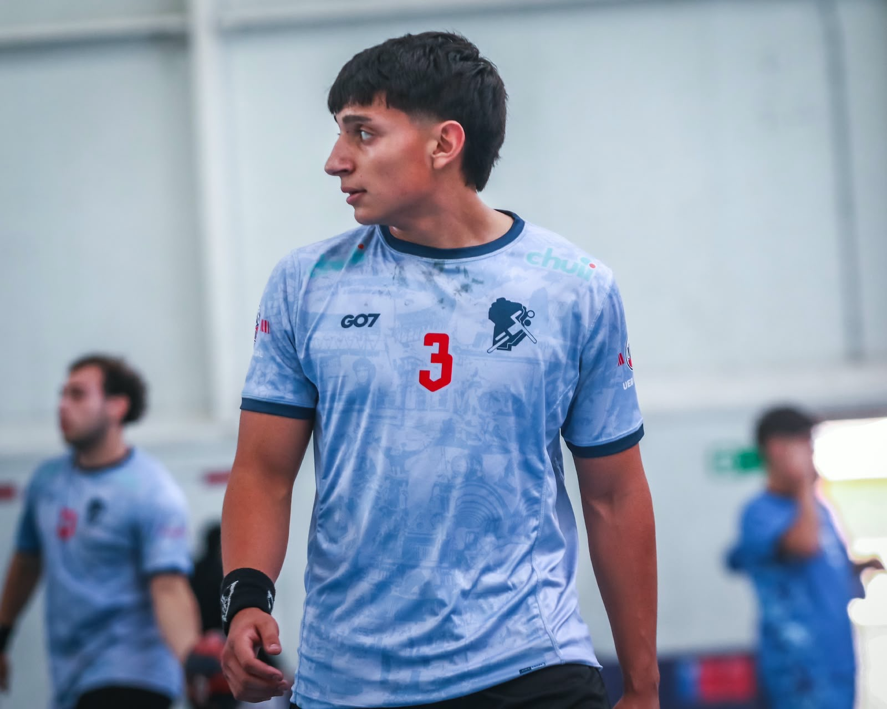
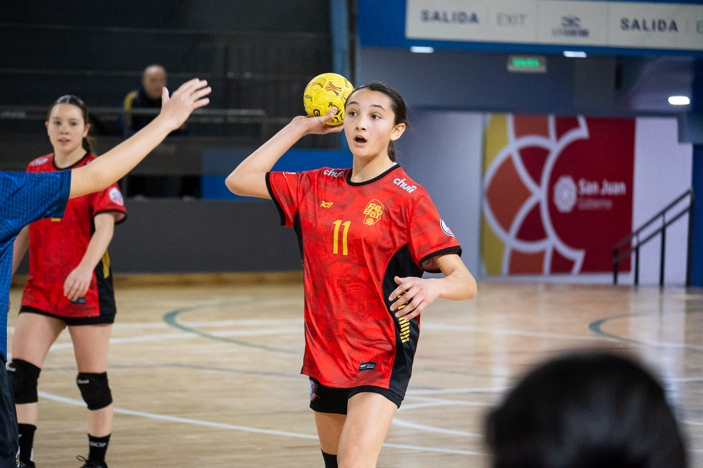
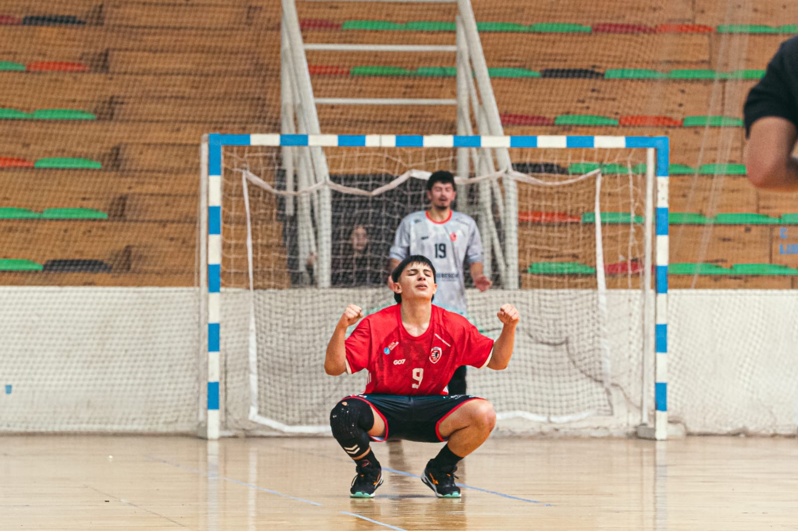
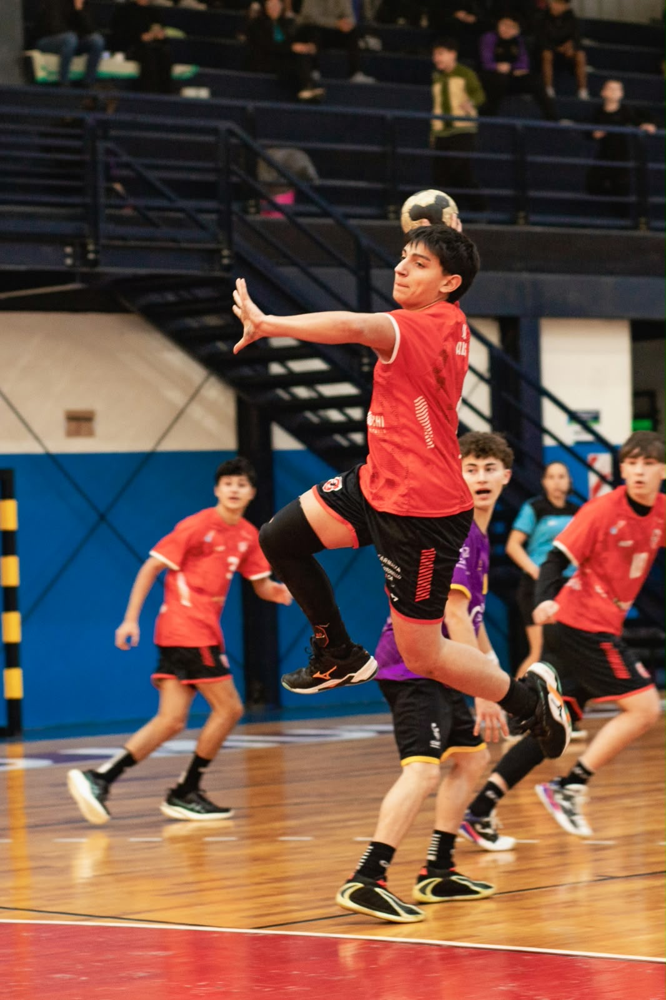
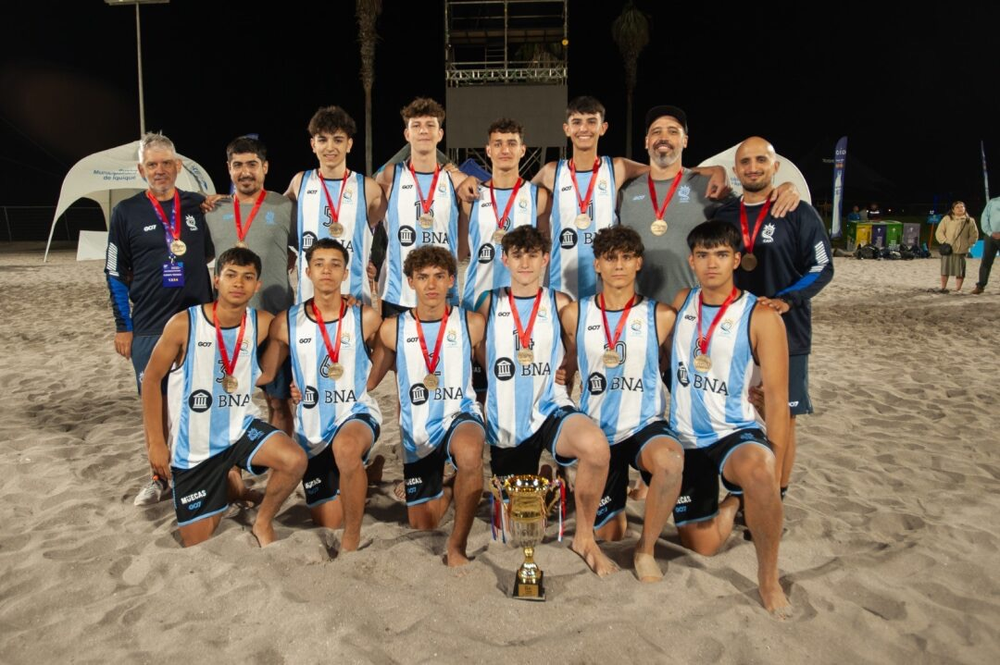
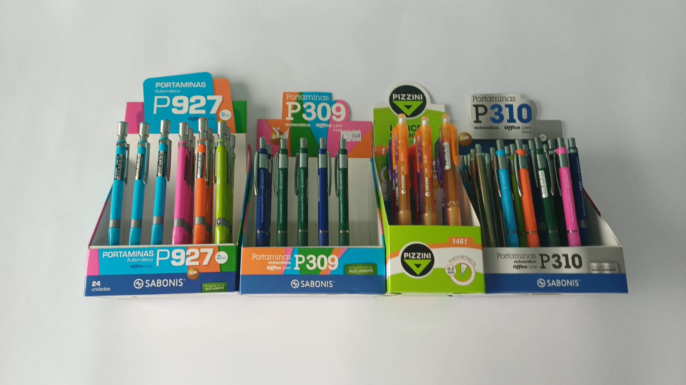
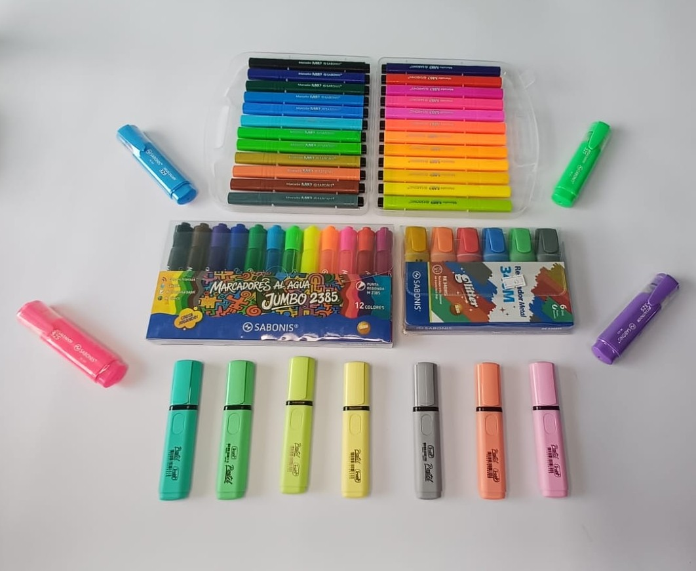
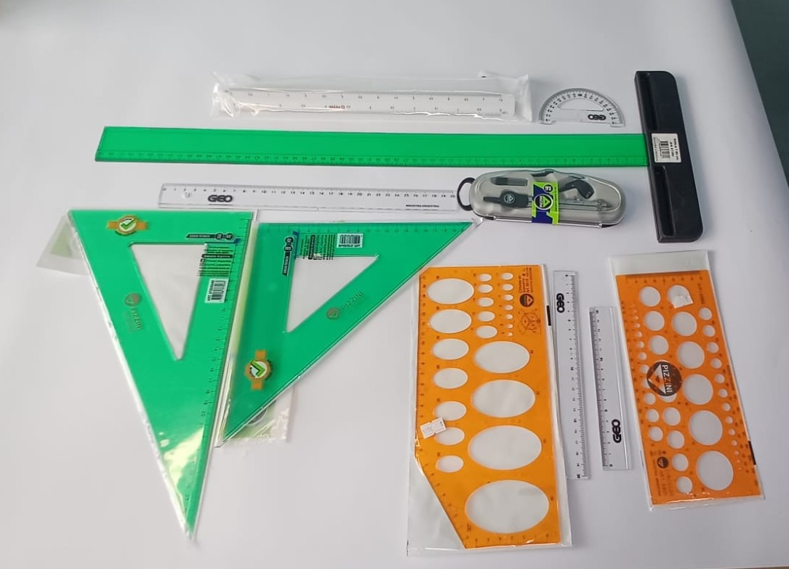
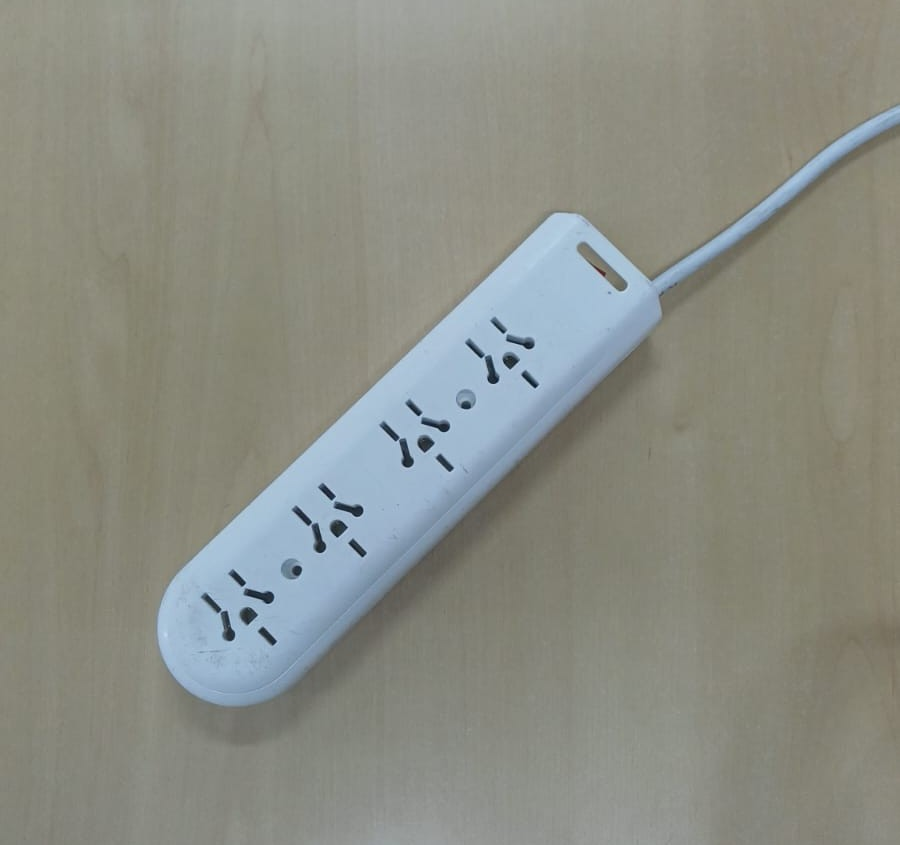
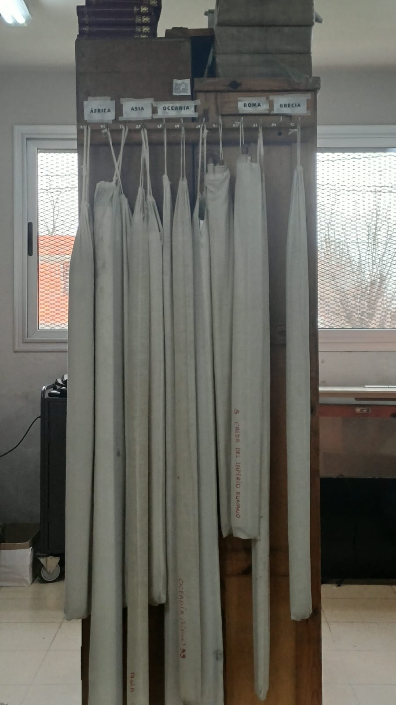

Joaquin Decara
Tu Portal Estudiantil
¡Conocé nuestras especialidades, explorá nuevas ideas y encontrá lo que más te gusta!
Explorá Informática, Química y Construcciones y descubrí todo lo que podés aprender.
Completá tus datos antes de comenzar.
Sabemos que elegir una orientación escolar en 3º año puede generar muchas dudas e incertidumbre.
Por eso creamos Advent: un espacio diseñado por y para estudiantes, enfocado en acompañarte a descubrir qué especialidad conecta realmente con vos.
Te brindamos herramientas sencillas, información clara sobre las orientaciones de nuestro colegio y un cuestionario de intereses vocacionales, pensado para ayudarte a tomar la mejor decisión para tu futuro.
Además, podés encontrar información general del cole, por ejemplo, de librería, horarios de biblioteca, actividades escolares, viandas, reconocimientos y mucho más.



Teléfono: 3547 561052
Delivery: Sí
Acá vamos a colocar las opciones de menú.
Acá vamos a colocar los días y horarios.
Acá vamos a colocar información adicional.
Teléfono: 3547 469516
Delivery: Sí
Acá vamos a colocar las opciones de menú.
Acá vamos a colocar los días y horarios.
Acá vamos a colocar información adicional.
Teléfono: 3547 561052
Delivery: Sí
Acá vamos a colocar las opciones de menú.
Acá vamos a colocar los días y horarios.
Acá vamos a colocar información adicional.
Teléfono: 3547 561052
Delivery: Sí
Acá vamos a colocar las opciones de menú.
Acá vamos a colocar los días y horarios.
Acá vamos a colocar información adicional.
Teléfono: 3547 561052
Delivery: Sí
Acá vamos a colocar las opciones de menú.
Acá vamos a colocar los días y horarios.
Acá vamos a colocar información adicional.
Teléfono: 3547 561052
Delivery: Sí
Acá vamos a colocar las opciones de menú.
Acá vamos a colocar los días y horarios.
Acá vamos a colocar información adicional.
Teléfono: 3547 561052
Delivery: Sí
Acá vamos a colocar las opciones de menú.
Acá vamos a colocar los días y horarios.
Acá vamos a colocar información adicional.
Teléfono: 3547 561052
Delivery: Sí
Acá vamos a colocar las opciones de menú.
Acá vamos a colocar los días y horarios.
Acá vamos a colocar información adicional.
Teléfono: 3547 561052
Delivery: Sí
Acá vamos a colocar las opciones de menú.
Acá vamos a colocar los días y horarios.
Acá vamos a colocar información adicional.
Teléfono: 3547 561052
Delivery: Sí
Acá vamos a colocar las opciones de menú.
Acá vamos a colocar los días y horarios.
Acá vamos a colocar información adicional.
Teléfono: 3547 561052
Delivery: Sí
Acá vamos a colocar las opciones de menú.
Acá vamos a colocar los días y horarios.
Acá vamos a colocar información adicional.
Teléfono: 3547 561052
Delivery: Sí
Acá vamos a colocar las opciones de menú.
Acá vamos a colocar los días y horarios.
Acá vamos a colocar información adicional.
Teléfono: 3547 561052
Delivery: Sí
Acá vamos a colocar las opciones de menú.
Acá vamos a colocar los días y horarios.
Acá vamos a colocar información adicional.
Teléfono: 3547 561052
Delivery: Sí
Acá vamos a colocar las opciones de menú.
Acá vamos a colocar los días y horarios.
Acá vamos a colocar información adicional.
Teléfono: 3547 561052
Delivery: Sí
Acá vamos a colocar las opciones de menú.
Acá vamos a colocar los días y horarios.
Acá vamos a colocar información adicional.
Teléfono: 3547 561052
Delivery: Sí
Acá vamos a colocar las opciones de menú.
Acá vamos a colocar los días y horarios.
Acá vamos a colocar información adicional.
Teléfono: 3547 561052
Delivery: Sí
Acá vamos a colocar las opciones de menú.
Acá vamos a colocar los días y horarios.
Acá vamos a colocar información adicional.
Teléfono: 3547 561052
Delivery: Sí
Acá vamos a colocar las opciones de menú.
Acá vamos a colocar los días y horarios.
Acá vamos a colocar información adicional.
Teléfono: 3547 561052
Delivery: Sí
Acá vamos a colocar las opciones de menú.
Acá vamos a colocar los días y horarios.
Acá vamos a colocar información adicional.
Teléfono: 3547 561052
Delivery: Sí
Acá vamos a colocar las opciones de menú.
Acá vamos a colocar los días y horarios.
Acá vamos a colocar información adicional.
Teléfono: 3547 561052
Delivery: Sí
Acá vamos a colocar las opciones de menú.
Acá vamos a colocar los días y horarios.
Acá vamos a colocar información adicional.
Teléfono: 3547 561052
Delivery: Sí
Acá vamos a colocar las opciones de menú.
Acá vamos a colocar los días y horarios.
Acá vamos a colocar información adicional.
Teléfono: 3547 561052
Delivery: Sí
Acá vamos a colocar las opciones de menú.
Acá vamos a colocar los días y horarios.
Acá vamos a colocar información adicional.
Teléfono: 3547 561052
Delivery: Sí
Acá vamos a colocar las opciones de menú.
Acá vamos a colocar los días y horarios.
Acá vamos a colocar información adicional.
Teléfono: 3547 561052
Delivery: Sí
Acá vamos a colocar las opciones de menú.
Acá vamos a colocar los días y horarios.
Acá vamos a colocar información adicional.
Teléfono: 3547 561052
Delivery: Sí
Acá vamos a colocar las opciones de menú.
Acá vamos a colocar los días y horarios.
Acá vamos a colocar información adicional.
Teléfono: 3547 561052
Delivery: Sí
Acá vamos a colocar las opciones de menú.
Acá vamos a colocar los días y horarios.
Acá vamos a colocar información adicional.
Teléfono: 3547 561052
Delivery: Sí
Acá vamos a colocar las opciones de menú.
Acá vamos a colocar los días y horarios.
Acá vamos a colocar información adicional.
Teléfono: 3547 561052
Delivery: Sí
Acá vamos a colocar las opciones de menú.
Acá vamos a colocar los días y horarios.
Acá vamos a colocar información adicional.
Teléfono: 3547 561052
Delivery: Sí
Acá vamos a colocar las opciones de menú.
Acá vamos a colocar los días y horarios.
Acá vamos a colocar información adicional.
Soy Joaquín Decara, de 6C. Juego al Handball en la Municipalidad de Alta Gracia.
Participé en la Selección Cordobesa durante 5 años consecutivos, tuve la oportunidad de estar en 2 procesos de Selección Argentina y he jugado en los binacionales 2007-2008 siendo 2009. También he jugado muchísimos nacionales de clubes donde hemos tenido grandes puestos y ganado infinidad de veces el torneo local (apertura y clausura) de la Fe.Co.Bal (Federación Cordobesa de Balonmano).






Soy Felipe Gonzalez Rivero, de 7B. Juego al Handball en la Municipalidad de Alta Gracia y al Beach Handball.
El beach me dio la oportunidad de vivir experiencias increíbles. Tuve el orgullo de vestir la camiseta de la Selección Argentina y jugar varios torneos importantes, incluyendo el Mundial. También me consagré campeón de Argentina en Mar del Plata, gané el Sur-Centro saliendo campeón de América y llegué a ser subcampeón del mundo en el Mundial de Clubes. Además, gracias a este deporte pude viajar y conocer lugares como Brasil, Chile y Túnez.
Con indoor fui a reoresentar a la Seleccion Cordobesa en varios Argentinos de Selecciones y tambien binavionales, con Alta Gracia jugué varios Nacionales A en los cuales el mejor puesto que tuvimos fue el 6to del pais.





Soy Guillermina González Rivero, tengo 14 años y voy a 2do año C. Juego al Handball y el beach handball en la Municipalidad de Alta Gracia en la categoría menores.
Forme parte de la Selección Argentina en 2025, donde salimos subcampeonas del sur centro (torneo suramericano de Handball). También forme parte de la Selección Cordobesa de mi categoría en 2025 y en 2026, este año quedamos 5tas a nivel nacional entre 16 provincias que participamos.
Entreno todos los días, voy al gimnasio y los fines de semana jugamos partidos del torneo de la Federación Cordobesa de Handball. En noviembre tenemos un torneo Nacional C en Chaco. También me llamaron para jugar con un equipo de Buenos Aires algunos torneos de beach handball


Información sobre las olimpiadas de matemática.
Información sobre las olimpiadas de química
Información sobre las olimpiadas de informática.
Información sobre la Copa Robótica.
NOMBRE Y APELLIDO: Salvador
TELEFONO: 3547 570898
ALIAS: salvamelo
DESCRIPCIÓN:
no solo podes conseguir estos productos, sino que además realizo fotocopias blanco y negro, a color, stickers, etc.






Universidad Católica de Córdoba.
Universidad Nacional de Córdoba.

Matías Vivas

Víctor Vella
| TURNO | LUNES | MARTES | MIÉRCOLES | JUEVES | VIERNES |
|---|---|---|---|---|---|
| MAÑANA |
VÍCTOR VELLA |
MATÍAS VIVAS |
MATÍAS VIVAS |
MATÍAS VIVAS |
MATÍAS VIVAS |
| TARDE |
MATÍAS VIVAS |
VÍCTOR VELLA |
VÍCTOR VELLA |
VÍCTOR VELLA |
VÍCTOR VELLA |

Sin profe

Sin profe

Sin profe
Con profe

Consultar
Esta orientación brinda una formación específica en el ámbito de la computación, tanto en hardware como en software. Al concluir sus estudios, los estudiantes obtienen el título de Técnico en Informática Profesional y Personal, lo que les permite una inserción directa en el mercado laboral. Por otro lado, la amplia formación teórica y práctica los prepara de la mejor manera para afrontar estudios universitarios en carreras afines.
Los Técnicos en Informática Profesional y Personal brindan servicios de asistencia técnica y asesoramiento al usuario y, como parte de ello, pueden instalar, reemplazar y configurar o reconfigurar elementos de hardware o de software, incluyendo la intercomunicación entre equipos, o también diseñar programas y ejecutar procesos para proteger datos, recuperar datos dañados o no accesibles, convertirlos a formatos diferentes para utilizarlos en otros ambientes, o complementar funcionalidades de sistemas. Es decir, no toma parte de un proceso productivo o de desarrollo de software, sino que brinda servicios de apoyo al usuario de computadoras personales, que son los que las operan como parte de sus actividades principales (productivas, comerciales, administrativas, artísticas o lúdicas) realizando intervenciones más o menos puntuales para resolver los problemas que los mismos experimentan en su utilización.
Es decir, no toma parte de un proceso productivo o de desarrollo de software, sino que brinda servicios de apoyo al usuario de computadoras personales, que son los que las operan como parte de sus actividades principales (productivas, comerciales, administrativas, artísticas o lúdicas) realizando intervenciones más o menos puntuales para resolver los problemas que los mismos experimentan en su utilización.
Estos horarios corresponden al ciclo lectivo 2026 y pueden estar sujetos a modificaciones el año que viene.
| HORA | LUNES | MARTES | MIÉRCOLES | JUEVES | VIERNES | HORA |
|---|---|---|---|---|---|---|
| MAÑANA | ||||||
| 07:45 09:05 |
LENGUA Roja Fabiana |
INT. A LA PROGRAM. Mira Jorge |
INGLÉS Luna Gabriela |
FÍSICA Orozco Gabriela |
FORM. CRISTIANA Argüello Antonella |
08:25 |
| 09:15 10:35 |
BIOLOGÍA Sisti Silvana |
LAB. DE SIST. OPER. Mira Jorge |
INGLÉS
GEOGRAFÍAMasgoret Germán |
LENGUA Roja Fabiana |
INTROD. A LA PROGRAM. Mira Jorge |
09:55 |
| 10:45 12:05 |
MATEMÁTICA Farias Laura |
LAB. DE APLICAC. | GEOGRAFÍA |
MATEMÁTICA Farias Laura |
LAB. DE SIST. OPER. Mira Jorge |
11:25 |
| 12:10 | LAB. DE APLICAC. | MATEMÁTICA | 12:50 | |||
| TARDE | ||||||
| 13:45 15:05 |
LAB. DE APLIC. Martin Miguel |
FÍSICA Orozco Gabriela |
HISTORIA Oyola Lucía |
14:25 | ||
| 15:15 16:35 |
LAB. DE APLIC.
ED. FÍSICA16:05 a 18:05 hs Liendo Marcelo |
BIOLOGÍA Sisti Silvana |
HISTORIA
QUÍMICA
|
15:55 | ||
| 16:45 18:05 |
FORM. ARTÍSTICA Hoffman Gabriela |
QUÍMICA Jacquelin Daniela |
17:25 | |||
| HORA | LUNES | MARTES | MIÉRCOLES | JUEVES | VIERNES | HORA |
|---|---|---|---|---|---|---|
| MAÑANA | ||||||
| 07:45 09:05 |
QUÍMICA Carzoglio Natalia |
ED. ARTÍSTICA Sliakonis Mauricio |
GESTIÓN DE DATOS Mariela Flores |
SIST. Y ORGANIZ. Miguel Martin |
EDUC. FÍSICA 7:45 a 9:45 hs |
08:25 |
| 09:15 10:35 |
QUÍMICA
HISTORIA
|
LENGUA Roja Fabiana |
MATEMÁTICA Farias Laura |
FÍSICA Maidana Federico |
Liendo Marcelo
GESTIÓN DE DATOSFlores Mariela |
09:55 |
| 10:45 12:05 |
HISTORIA Masgoret Germán |
MATEMÁTICA Farias Laura |
FÍSICA Maidana Federico |
LENGUA
FORM. CRIS. Y P. VIDAVictor Vella |
GESTIÓN DE DATOS Flores Mariela |
11:25 |
| 12:10 | SIST. Y ORGANIZ. | MATEMÁTICA | 12:50 | |||
| TARDE | ||||||
| 13:45 15:05 |
INGLÉS Coria Marcia |
LAB DE HARDWARE Piccinni Tamara |
PSICOLOGÍA Heredia Belén |
LAB DE HARDWARE Piccinni Tamara |
14:25 | |
| 15:15 16:35 |
INGLÉS
SIST. Y ORGANIZ.Martin Miguel |
LAB DE HARDWARE LAB DE HARDWARE |
PSICOLOGÍA
GEOGRAFÍA
|
LAB DE HARDWARE Piccinni Tamara |
15:55 | |
| 16:45 18:05 |
SIST. Y ORGANIZ. | GEOGRAFÍA | 17:25 | |||
| HORA | LUNES | MARTES | MIÉRCOLES | JUEVES | VIERNES | HORA |
|---|---|---|---|---|---|---|
| MAÑANA | ||||||
|
07:45 09:05 |
RECURSOS HUM Torres María |
BASE DE DATOS Miguel Martin |
ANAL. MATEMÁTICO Manias Cynthia |
FILOSOFÍA Sliakonis Maxi |
ESTADÍSTICA Molina Irene |
08:25 |
|
09:15 10:35 |
FILOSOFÍA LAB DE APLICAC. II |
BASE DE DATOS BASE DE DATOS |
ANAL. MATEMÁTICO LAB DE APLICAC. II | LAB DE APLICAC. II ANAL. MATEMÁTICO |
ED. ARTÍSTICA (TEATRO) Ferrari Mara |
09:55 |
|
10:45 12:05 |
LAB DE APLICAC. II Martin Miguel |
LENGUA Roja Fabiana |
Martin Miguel BASE DE DATOS | Manias Cynthia ESTADÍSTICA |
BIOÉT. Y CUID. VIDA Oyola L / Schiavone Clara |
11:25 |
| 12:10 | RECURSOS HUM | LENGUA | Martin Miguel | Molina Irene | 12:50 | |
|
13:45 15:05 |
ECON. Y GEST. Miranda Gladys |
INGLÉS Coria Marcia |
CIUD. Y POLÍTICA Persichelli Ivana |
LAB DE PROGRAM Mira Jorge |
14:25 | |
|
15:15 16:35 |
ECON. Y GEST. Miranda Gladys |
INGLÉS
LAB DE PROGRAM. Mira Jorge |
CIUD. Y POLÍTICA
EDUCACIÓN FÍSICA 15:55 a 17:55 hs Villalba Emanuel |
LAB DE PROGRAM | 15:55 | |
|
16:45 18:05 |
LAB DE PROGRAM | 17:25 |
| HORA | LUNES | MARTES | MIÉRCOLES | JUEVES | VIERNES | HORA |
|---|---|---|---|---|---|---|
| MAÑANA | ||||||
| 07:45 09:05 |
FORM. AMB. TRABAJO Piccinni Tamara |
MARCO JURÍDICO Cabral Gustavo |
FORM. AMB. TRABAJO Piccinni Tamara |
INGLÉS TÉCNICO Luna Gabriela |
CONEXIÓN REDES Cabral Gustavo |
08:25 |
| 09:15 10:35 |
FORM. AMB. TRABAJO Piccinni Tamara |
INST. ADM. REDES Cabral Gustavo |
FORM. AMB. TRABAJO Piccinni Tamara |
EMPRENDIMIENTOS |
CONEXIÓN REDES Cabral Gustavo |
09:55 |
| 10:45 12:05 |
FORM. AMB. TRABAJO Piccinni Tamara |
INST. ADM. REDES
MANTENIM. HARDMira Jorge |
MANTENIM. HARD Mira Jorge |
EMPRENDIMIENTOS |
DOCTRINA SOCIAL Oyola L / Rego Marcos |
11:25 |
| 12:10 | MANTENIM. HARD | MANTENIM. HARD | MARCO JURÍDICO | 12:50 | ||
| TARDE | ||||||
| 13:45 15:05 |
MANTENIM. HARD Mira Jorge |
INST. ADM. REDES Cabral Gustavo |
CONEXIÓN REDES Cabral Gustavo |
14:25 | ||
| 15:15 16:35 |
MANTENIM. HARD
|
INST. ADM. REDES
HIGIENE Y SEG. LAB.
|
INGLÉS TÉCNICO Luna Gabriela |
15:55 | ||
| 16:45 18:05 |
López Daniel HIGIENE Y SEG. LAB. |
17:25 | ||||
En esta sección encontrarás información sobre los docentes de la especialidad de Informática, las materias que dictan y en qué cursos.
Podrás conocer quiénes te acompañarán de 4to a 7mo año y ver un resumen de los contenidos a desarrollar en cada materia.
Importante: Los contenidos son del ciclo lectivo 2026, pueden estar sujetos a modificaciones para el ciclo 2027.
pepita martinez 4to C
necesito ayuda con programacion, alguno conoce un particular? necesito aprobar con mira
comentarios(3)
Unidad 1. Literatura
Vas a aprender qué es la literatura y cómo los textos pueden crear historias imaginarias para
transmitir ideas y emociones.
Estudiarás los géneros narrativo, dramático y lírico, los mitos y las epopeyas, y conocerás las
características de los héroes de las historias antiguas.
Leerás y analizarás textos como los mitos de Prometeo y Teseo, La casa de Asterión, La Ilíada y La
Eneida.
También trabajarás con la palabra poética, la ficción, la verosimilitud y las relaciones entre
diferentes textos.
Unidad 2. Edad Media y Renacimiento
Vas a conocer la literatura europea medieval y la figura del héroe épico y del caballero
andante.
Estudiarás las características de la poesía épica medieval y cómo un texto puede relacionarse con
otros.
Leerás y analizarás fragmentos del Cantar de Mio Cid para comprender los valores, las aventuras y
las características de los héroes de esa época.
Unidad 3. El Renacimiento
Aprenderás cómo era la sociedad durante el Renacimiento y cuáles fueron las características de su
literatura.
Estudiarás la poesía, la narrativa y el teatro de ese período.
Conocerás a William Shakespeare y el teatro isabelino, y analizarás la tragedia Romeo y Julieta.
También trabajarás con el análisis sintáctico de oraciones coordinadas y subordinadas.
Unidad 4. El Barroco
Vas a conocer la cultura española de los siglos XVI y XVII y las características de la literatura
barroca.
Estudiarás cómo Miguel de Cervantes cuestionó los libros de caballería a través de su obra Don
Quijote de la Mancha.
Leerás y analizarás fragmentos de esta novela para comprender sus personajes, sus críticas y su
importancia literaria.
Unidad 5. Romanticismo y Vanguardismo
Vas a estudiar dos movimientos literarios y sus características.
Leerás cuentos de Edgar Allan Poe, Mary Shelley y Oscar Wilde, y conocerás a sus autores.
También aprenderás a reconocer y escribir textos argumentativos, como notas de opinión y
editoriales.
Finalmente, estudiarás el Vanguardismo y analizarás La casa de Bernarda Alba, de Federico García
Lorca.
Unidad 1. Literatura
Comprender qué es la literatura, qué significa que un texto sea ficcional y cuál es su función
estética.
Estudiar la verosimilitud, la intertextualidad y la palabra poética.
Leer y analizar Mentir para decir la verdad y Amigos por el viento, de Liliana Bodoc.
Conocer los géneros literarios tradicionales y la periodización de la literatura
hispanoamericana.
Estudiar la literatura precolombina y el legado de las culturas azteca, maya e inca mediante textos
como Popol Vuh y Wakon y los Willkas.
Relacionarlos con La noche boca arriba, de Julio Cortázar, y Eclipse, de Augusto Monterroso.
Unidad 2. Literatura uruguaya
Conocer autores y obras representativas de Uruguay.
Leer y analizar los cuentos Réquiem con tostadas y Jules y Jim, de Mario Benedetti, y los textos El
mundo, La casa de las palabras, La noche y El crimen perfecto, de Eduardo Galeano.
Unidad 4. Literatura peruana y argumentación
Conocer las diferencias entre literatura indígena, indigenista, indianista y escrita en lenguas
indígenas.
Leer y analizar "El sueño del pongo", de José María Arguedas.
Trabajar la argumentación, su estructura y sus recursos, incluidos los modalizadores y
subjetivemas.
Aprender a reconocer y elaborar artículos de opinión y ensayos.
Unidad 5. Literatura colombiana
Estudiar la literatura colombiana y el realismo mágico de Gabriel García Márquez.
Leer y analizar los cuentos Alguien desordena estas rosas y Algo muy grave va a suceder en este
pueblo, además de la novela Crónica de una muerte anunciada.
Trabajar también los verbos de irregularidad propia, su reconocimiento y conjugación, y los
participios irregulares.
Unidad 1. Buscando llaves
Comprender qué es la literatura, reconocer su carácter ficcional y conocer los distintos géneros
literarios.
Estudiar conceptos como la verosimilitud —qué hace que una historia resulte creíble— y la
intertextualidad, que aparece cuando una obra se relaciona con otra.
Recorrer las etapas de la literatura argentina y leer y analizar La sirena, de Manuel Mujica Láinez,
y Juan López y John Ward, de Jorge Luis Borges.
Conocer el Neoclasicismo mediante el análisis del Himno Nacional Argentino y su contexto histórico.
Unidad 2. Abriendo las puertas del siglo XIX: civilización y
barbarie
Conocer el contexto histórico y literario de la Argentina del siglo XIX y analizar la oposición
entre civilización y barbarie.
Estudiar el Romanticismo argentino y sus características a través de la lectura de El matadero, de
Esteban Echeverría, y Facundo, de Domingo Faustino Sarmiento.
Aprender qué es la literatura gauchesca, cómo evolucionó y cuáles son las características de sus
poemas.
Leer y analizar los consejos de Martín Fierro y del Viejo Vizcacha en Martín Fierro, de José
Hernández, prestando atención a los narradores, el tiempo, el espacio y el lenguaje.
Unidad 3. Realismo en el teatro argentino: tiempos de inmigrantes
Conocer las características del Realismo y su desarrollo en el teatro argentino.
Estudiar el origen del grotesco criollo y su relación con el sainete, reconociendo qué elementos
distinguen a cada género.
Leer y analizar Stéfano, de Armando Discépolo, para comprender cómo el teatro representa los
conflictos y las experiencias de su época.
Unidad 4. Literatura y mito: Borges y Cortázar
Conocer los estilos y las formas de escribir de Jorge Luis Borges y Julio Cortázar.
Leer y analizar La casa de Asterión, de Borges, Casa tomada y Los reyes, de Cortázar.
Reflexionar sobre la presencia de los mitos en la literatura y sobre las distintas maneras de
construir historias, personajes y significados.
Unidad 5. Literatura de la dictadura
Recorrer el contexto argentino del siglo XX y comprender la relación entre literatura, memoria y
experiencia histórica.
Analizar cómo las obras literarias pueden representar acontecimientos del pasado y ayudar a
reflexionar sobre ellos
Leer y analizar La pregunta de sus ojos, de Eduardo Sacheri.
Unidad 6. Para abrir futuras puertas
Aprender a preparar un currículum vitae (CV), conocer qué información debe incluir y distinguir
diferentes tipos de CV.
Trabajar la carta de presentación y sus contenidos, y conocer recomendaciones para afrontar una
entrevista laboral.
Eje 1. Los seres vivos, la evolución y la genética
Vas a aprender cuáles son las características de los seres vivos y cómo se organizan.
Estudiarás las principales teorías de la evolución propuestas por Lamarck, Darwin y Wallace, y cómo
se relacionan con las adaptaciones y la diversidad de especies.
También conocerás la teoría celular, las diferencias entre células procariotas y eucariotas, las
biomoléculas, la fotosíntesis y la respiración celular.
Además, estudiarás el ADN, el ARN, los genes, los cromosomas, la herencia de características, la
división celular, las mutaciones y algunas aplicaciones de la ingeniería genética, como los
organismos transgénicos y la clonación.
Eje 2. Salud y enfermedad
Vas a comprender qué significan la salud y la enfermedad y cómo influyen en ellas los factores
biológicos, el ambiente, los hábitos de vida y la atención sanitaria.
Aprenderás a diferenciar una epidemia, una pandemia y una endemia, y estudiarás enfermedades
importantes en Argentina, como el mal de Chagas, el dengue, la COVID-19 y la fiebre hemorrágica
argentina.
También analizarás la relación entre el cuidado del ambiente y la prevención de enfermedades.
Eje 3. La nutrición y el funcionamiento del cuerpo humano
Vas a estudiar cómo trabajan juntos los sistemas del cuerpo para mantenernos vivos: la digestión y
la nutrición, la respiración, el transporte de sustancias y la excreción.
También conocerás la homeostasis, el ritmo circadiano y el papel de las hormonas.
Analizarás cómo influyen los hábitos cotidianos en el organismo, qué efectos pueden tener los
alimentos ultraprocesados y qué información brinda el etiquetado frontal de los alimentos.
Eje 4. Sexualidad, reproducción y cuidado integral
Vas a conocer los cambios que ocurren durante la pubertad y la adolescencia, los órganos del sistema
genital y sus funciones, las hormonas y los gametos.
Estudiarás la fecundación, el embarazo, el desarrollo embrionario, el parto y las técnicas de
fertilización asistida.
También trabajarás sobre sexualidad responsable, métodos anticonceptivos e infecciones de
transmisión sexual (ITS), incluyendo sus formas de prevención y tratamiento, desde una perspectiva
de derechos y cuidado de la salud.
Eje 5. Los sistemas nervioso y endocrino
Aprenderás cómo el sistema nervioso recibe información y coordina las respuestas del cuerpo, y cómo
se relaciona con el sistema endocrino.
Estudiarás las principales glándulas y las hormonas que producen.
También conocerás cómo afectan distintas sustancias psicoactivas al sistema nervioso y al organismo,
y qué son los disruptores endocrinos presentes en algunos productos y cómo pueden interferir con la
acción hormonal.
Eje 6. El sistema inmune y las defensas del organismo
Vas a aprender cómo se defiende el cuerpo frente a microorganismos y otras amenazas.
Estudiarás las barreras naturales, como la piel y las mucosas, y el papel de los linfocitos B y T en
la respuesta inmunitaria.
También conocerás cómo funciona la memoria inmunológica, qué diferencias existen entre sueros y
vacunas y por qué son importantes para prevenir enfermedades.
Unidad 1. Ecuaciones lineales y sistemas de ecuaciones
Vas a aprender a resolver ecuaciones y sistemas de dos ecuaciones con dos incógnitas.
También estudiarás las funciones lineales y afines, cómo representarlas en gráficos y cómo encontrar
sus soluciones mediante distintos métodos: gráfico, sustitución, igualación, suma y resta, y regla
de Cramer.
Aplicarás estos conocimientos para resolver problemas.
Unidad 2. Sistemas de medición de ángulos
Vas a conocer las distintas formas de medir ángulos: el sistema sexagesimal, el centesimal y el
radial.
Aprenderás a convertir medidas de un sistema a otro, comprender qué es un radián y trabajar con
ángulos orientados, opuestos, complementarios y suplementarios.
Unidad 3. Razones trigonométricas y triángulos rectángulos
Aprenderás a relacionar los lados y los ángulos de un triángulo rectángulo mediante el seno, el
coseno y la tangente.
También conocerás la cosecante, la secante y la cotangente.
Vas a calcular lados y ángulos y a resolver problemas aplicando estas relaciones.
Unidad 4. Triángulos oblicuángulos
Vas a estudiar los triángulos que no tienen un ángulo recto.
Aprenderás a utilizar el teorema del seno y el teorema del coseno para calcular lados y ángulos
desconocidos y resolver diferentes situaciones problemáticas.
Unidad 5. Expresiones algebraicas y polinomios
Vas a aprender qué son los polinomios, cuáles son sus elementos y cómo reconocer su grado,
coeficiente principal y términos.
Trabajarás con polinomios ordenados y completos, y practicarás operaciones como la suma, la resta,
la multiplicación y la división.
También estudiarás la regla de Ruffini y el teorema del resto.
Unidad 6. Factorización de expresiones algebraicas
Aprenderás a transformar expresiones algebraicas en productos más simples mediante distintos casos
de factoreo: factor común, factor común por grupos, trinomio cuadrado perfecto, cuatrinomio cubo
perfecto y diferencia de cuadrados, entre otros.
También trabajarás con la suma y resta de potencias, la búsqueda de raíces mediante la fórmula de
Bhaskara y la simplificación de expresiones.
Unidad 1. Expresiones algebraicas enteras
Aprender a descomponer polinomios en factores más simples, utilizando distintos métodos de
factorización.
Trabajar con factor común, factor común por grupos, trinomio cuadrado perfecto, cuatrinomio cubo
perfecto, diferencia de cuadrados y suma y resta de potencias con igual exponente.
Resolver también ejercicios que combinen varios de estos casos.
Unidad 2. Expresiones algebraicas fraccionarias
Aprender a simplificar expresiones algebraicas que contienen fracciones con letras y números.
Resolver multiplicaciones, divisiones, sumas y restas de estas expresiones, y aplicar los
procedimientos necesarios para resolver operaciones combinadas.
Unidad 3. Números reales
Repasar las propiedades de las potencias y las raíces.
Reconocer los números reales e irracionales y trabajar con radicales.
Aprender a extraer factores de una raíz, sumar, restar, multiplicar y dividir radicales,
racionalizar el divisor y resolver potencias con exponentes racionales, como las fracciones.
Unidad 4. Números complejos
Conocer qué son los números complejos y cómo se representan mediante su forma binómica y como pares
ordenados.
Aprender a sumar, restar, multiplicar y dividir números complejos, trabajar con complejos conjugados
y calcular potencias.
Representarlos gráficamente, utilizar coordenadas polares y expresar los números complejos en forma
trigonométrica.
Unidad 5. Función cuadrática
Estudiar las funciones de segundo grado y comprender cómo se representan gráficamente mediante
parábolas.
Analizar cómo cambia el gráfico cuando se modifica la función, calcular las coordenadas del vértice
y encontrar las raíces.
Trabajar con las formas general, canónica y factorial, y aprender a pasar de una forma a otra.
Estudiar la función cuadrática inversa, las intersecciones entre rectas y parábolas y entre dos
parábolas, y determinar la ecuación de una función a partir de tres puntos.
Unidad 6. Función polinómica
Conocer la forma general de las funciones polinómicas y aprender a identificar su grado.
Determinar las raíces de estas funciones, repasar los distintos métodos de factorización y aplicar
el teorema de Gauss.
Utilizar las raíces para construir y representar gráficamente funciones polinómicas.
Unidad 1. Introducción a la programación lógica, algoritmia y
pseudocódigo
Introducirse en la programación lógica mediante el análisis de problemas y la elaboración de
algoritmos y pseudocódigos.
Desarrollar el pensamiento lógico y sistémico para identificar problemas y seleccionar las
herramientas más adecuadas para resolverlos, ya sean instrucciones de código, programas,
aplicaciones o recursos de hardware.
Utilizar PSeInt para representar soluciones mediante instrucciones escritas en lenguaje sencillo y
en castellano.
Unidad 2. Mecanografía
Desarrollar habilidades de escritura rápida y precisa mediante técnicas de mecanografía.
Aprender la posición correcta de las manos y el uso adecuado de los dedos para escribir con mayor
eficiencia.
Utilizar herramientas como Word para realizar actividades, Mecanet para practicar la escritura y
LightShot para capturar pantallas y documentar ejercicios.
Unidad 3. Introducción a la ofimática avanzada: paquete Microsoft
Office
Profundizar en el uso de las aplicaciones de Microsoft Office para elaborar documentos complejos y
realizar tareas de oficina.
Trabajar con hojas de cálculo mediante funciones y operaciones sobre datos, y utilizar PowerPoint
para crear presentaciones aplicables a esta materia y a otros espacios curriculares.
Conocer herramientas complementarias como Publisher y Visio mediante actividades prácticas.
Incorporar también alternativas de software libre, reconociendo sus funcionalidades y posibilidades
de uso en instituciones educativas y ámbitos administrativos.
Unidad 4. Software de diseño gráfico
Conocer las principales herramientas de diseño gráfico y sus posibilidades para crear y editar
imágenes e ilustraciones.
Utilizar programas como Adobe Photoshop y GIMP para desarrollar recursos visuales que puedan
incorporarse a páginas web y a las aplicaciones creadas en las materias de programación.
Unidad 5. Programación para Android
Integrar los conocimientos de diseño y programación mediante la creación de aplicaciones para
teléfonos celulares con sistema operativo Android.
Utilizar App Inventor, en sus versiones en línea y ejecutable, para desarrollar proyectos mediante
una interfaz visual basada en bloques que facilita la construcción del código y permite iniciarse en
el desarrollo de aplicaciones móviles.
Unidad 6. Edición de audio
Comprender el concepto de sonido y reconocer los distintos tipos de archivos de audio y video que
pueden importarse para su edición.
Aprender a cortar, copiar y pegar fragmentos, y estudiar las frecuencias de muestreo, los bits y las
propiedades generales del sonido.
Utilizar programas como Sound Forge y Audacity para aplicar efectos y filtros, mezclar pistas,
realizar grabaciones, corregir niveles y ruidos y guardar los proyectos en diferentes formatos según
las necesidades de cada trabajo.
Unidad 7. Edición de video
Desarrollar la creatividad mediante la producción y edición de contenidos audiovisuales.
Conocer las herramientas disponibles para organizar y modificar videos, integrar recursos multimedia
y utilizar el lenguaje audiovisual como medio de comunicación.
Trabajar con programas como Sony Vegas Pro y OpenShot para elaborar proyectos propios y aplicar las
funcionalidades de edición según los objetivos de cada producción.
Unidad 1. Introducción al estudio de sistemas
Comprender los conceptos fundamentales de la Teoría General de Sistemas y del enfoque de
sistemas.
Estudiar los objetivos, la estructura y el entorno de un sistema, diferenciando sistemas,
metasistemas y subsistemas.
Analizar sus entradas, procesos, salidas y recursos, así como las distintas formas de clasificarlos
según su funcionamiento, permeabilidad, origen y complejidad.
Reconocer propiedades como estabilidad, adaptabilidad, eficiencia, sinergia, integración, armonía y
tensión.
Conocer los aportes de las escuelas clásicas de la administración y comprender la importancia del
enfoque sistémico en el diseño de sistemas.
Unidad 1. Introducción al estudio de sistemas
Estudiar el concepto y los objetivos de las organizaciones, comprendiendo su funcionamiento como
sistemas integrados por recursos humanos, materiales, tecnológicos y financieros.
Analizar la evolución del concepto de calidad y su importancia en las organizaciones modernas,
considerando la orientación al cliente, la mejora continua, la medición y el enfoque por
procesos.
Conocer la organización formal, sus principios, estructuras, organigramas, manuales y criterios de
departamentalización.
Reconocer los distintos tipos de organizaciones y empresas, incluidas las pequeñas y medianas
empresas (PYMES).
Comprender los procesos de negocio vinculados con compras, ventas, control de stock y recursos
humanos, así como las diferencias entre organización formal e informal y la relación entre los
objetivos personales y organizacionales.
Unidad 3. Funciones administrativas de la organización
Comprender la administración y sus principales funciones dentro de una organización.
Estudiar la planificación, sus etapas y herramientas, incluyendo objetivos, políticas, planes,
programas, presupuestos, premisas y procedimientos, con aplicación de técnicas como el diagrama de
Gantt.
Analizar los sistemas de control y la retroalimentación como mecanismos para evaluar resultados y
mejorar el funcionamiento organizacional.
Reconocer la importancia de la dirección, la comunicación, la motivación, el liderazgo y la armonía
de objetivos, así como las estrategias para reducir conflictos.
Reflexionar sobre las tareas y responsabilidades de los directivos y empresarios, los alcances
profesionales del analista y del ingeniero en sistemas de información y los riesgos asociados al
ejercicio profesional.
Unidad 1. Repaso de programación
Profundizar los conocimientos de lógica y algoritmos para comprender cómo un mismo problema puede
resolverse utilizando distintos lenguajes de programación.
Instalar, configurar y utilizar Visual Basic, C++, Java y Python, desarrollando ejercicios que
permitan comparar las formas de expresar una solución.
Incorporar la conexión con bases de datos locales y reconocer la importancia de elegir las
herramientas adecuadas para cada aplicación.
Eje 2. Aplicaciones y software del mercado
Comprender qué es una aplicación informática y conocer los distintos programas disponibles en el
mercado.
Investigar sus características, clasificaciones, procesos de instalación y formas de
utilización.
Elaborar tutoriales que expliquen su funcionamiento y cuadros comparativos que permitan analizar
ventajas y desventajas.
Reconocer aplicaciones competidoras, estudiar sus licencias y métodos de distribución y presentar
los resultados de la investigación mediante producciones multimedia.
Eje 3. Clasificación de las aplicaciones
Estudiar los distintos tipos de aplicaciones, incluyendo las de negocio, utilitarias, personales, de
entretenimiento y web.
Analizar las necesidades que originan cada tipo de desarrollo, las empresas que crean estos
programas y las diferencias entre aplicaciones gratuitas y pagas.
Comprender los métodos de distribución y las condiciones de las licencias.
Desarrollar aplicaciones web que puedan ser utilizadas por la comunidad una vez publicadas en un
servidor, incorporar simulaciones de atención al cliente y aprender a elaborar manuales de usuario
claros y completos.
Eje 4. Desarrollo de aplicaciones funcionales
Diseñar y desarrollar una aplicación que responda a una necesidad concreta, utilizando los lenguajes
de programación estudiados.
Investigar soluciones similares existentes en el mercado e identificar oportunidades de mejora para
el proyecto propio.
Documentar el funcionamiento de la aplicación y definir su licencia, considerando tanto los
desarrollos locales como los web.
Introducirse en las pruebas de software o testing para detectar errores y verificar el
funcionamiento correcto, y utilizar blogs o foros para intercambiar opiniones y recibir comentarios
sobre el producto.
Eje 5. Relevamiento y estructuración de datos para el análisis de
información
Aprender a identificar los requisitos de hardware y software necesarios para que una aplicación
funcione correctamente.
Analizar la relación entre precio y facilidad de uso y comprender los fundamentos de la seguridad
informática, los niveles de protección y las diferencias entre copyright y copyleft.
Elaborar licencias formales y manuales de usuario, utilizando terminología técnica y lenguaje
formal, e incorporar su traducción a otro idioma.
Desarrollar un portafolio profesional y analizar la relación con los clientes, las aplicaciones
comerciales estandarizadas y las de uso exclusivo, considerando las políticas de desarrollo y los
derechos de propiedad intelectual.
Eje 6. Administración de proyectos
Comprender qué es un proyecto informático y analizar ejemplos de desarrollos exitosos.
Aprender a organizar las primeras etapas de un proyecto mediante la generación de ideas, la
definición de objetivos y la planificación de tareas.
Utilizar herramientas como Visio y Project para representar las fases del trabajo establecer tiempos
y realizar un seguimiento del avance.
Aplicar estos conocimientos en un proyecto real, con plazos definidos, como trabajo final de la
materia.
Unidad 1. Teoría de bases de datos
Comprender los principios de creación y diseño de bases de datos y reconocer la función de los
sistemas gestores de bases de datos.
Estudiar las tareas de un administrador de bases de datos, la organización mediante esquemas y
subesquemas y las operaciones básicas para trabajar con información.
Analizar la normalización y las formas normales para evitar redundancias y mejorar la estructura de
los datos.
Comprender el modelo entidad-relación como herramienta para representar entidades, atributos y
vínculos, y utilizar estos conocimientos al diseñar aplicaciones que respondan a las necesidades de
los usuarios.
Unidad 2. Instalación, configuración y consultas en MySQL Workbench y SQL
Server
Aprender a instalar, configurar y utilizar diferentes sistemas gestores de bases de datos, como
MySQL, SQL Server y XAMPP.
Elaborar consultas SQL para resolver problemas planteados sobre bases de datos creadas por los
estudiantes o proporcionadas por terceros.
Comprender la importancia de la normalización y aplicarla al diseñar nuevas bases de datos o mejorar
estructuras existentes.
Utilizar bases de datos locales para almacenar la información de páginas web desarrolladas por los
propios estudiantes e investigar los gestores más utilizados actualmente, documentando sus
características y aplicaciones.
Unidad 3. Técnicas de interfaces gráficas de usuario (GUI)
Comprender la importancia de la comunicación entre el usuario y una aplicación informática.
Diseñar interfaces gráficas teniendo en cuenta las necesidades de las personas, la coherencia visual
y la prevención de errores durante el uso.
Utilizar Visual Basic 2010 para desarrollar interfaces y definir su comportamiento, conectándolas
con las bases de datos correspondientes.
Representar la lógica de funcionamiento mediante pseudocódigo y diagramas de flujo, y realizar
pruebas de software para comprobar que las aplicaciones funcionen correctamente.
Unidad 4. Implementación de soluciones y seguridad en las bases de
datos
Integrar los conocimientos de diseño y programación para desarrollar soluciones que permitan
gestionar información de manera confiable.
Comprender las etapas del desarrollo de sistemas, incluyendo el diseño de los datos, la
arquitectura, la interfaz y los procedimientos.
Estudiar la importancia de la seguridad informática y conocer normas y estándares vinculados con ISO
e IEEE.
Aprender a documentar sistemas, elaborar manuales de usuario, detectar errores y problemas de
seguridad en aplicaciones propias y de terceros, y aplicar principios de auditoría informática.
Desarrollar habilidades para reparar fallas, brindar asesoramiento técnico y considerar los aspectos
legales, sociales y éticos del desarrollo.
Presentar y promocionar los productos creados mediante recursos audiovisuales.
Eje 1. Corporalidad, capacidades físicas y conciencia corporal
Conocer las capacidades físicas, como la resistencia aeróbica y anaeróbica, la fuerza, la velocidad
y la resistencia muscular.
Aprender a organizar ejercicios teniendo en cuenta el esfuerzo, las pausas, la recuperación y el
cuidado del cuerpo.
Eje 2. Deportes institucionales: vóley, handball, básquet y fútbol
Practicar estos deportes y avanzar más allá de las técnicas básicas.
Aprender estrategias de ataque y defensa, roles dentro del equipo, jugadas preparadas y formas de
tomar decisiones durante el partido.
Eje 3. Imagen corporal, salud y deporte
Reflexionar sobre la imagen del cuerpo, los mensajes que transmiten los medios de comunicación y su
relación con el deporte.
Promover el respeto por los demás, el juego limpio y una actitud crítica frente a los estereotipos.
Eje 4. Integración y cierre deportivo
Integrar lo aprendido mediante actividades y encuentros deportivos.
Preparar jugadas en equipo, poner en práctica las estrategias trabajadas y evaluar tanto el
desempeño deportivo como las actitudes de respeto y colaboración.
Eje 1. Corporalidad, capacidades físicas y conciencia corporal
Aprender a planificar rutinas de entrenamiento de 15 minutos, utilizando métodos de entrenamiento
continuo extensivo e intervalado.
Organizar ejercicios considerando el volumen, la intensidad y las pausas.
Trabajar la movilidad articular, la respiración, la sensopercepción y la gimnasia blanda para
reconocer las propias sensaciones corporales, los límites y las zonas de comodidad o incomodidad
durante el esfuerzo.
También conducir el calentamiento grupal de manera autónoma y registrar la propia evolución.
Eje 2. Vóley
Profundizar las estrategias de juego y la coordinación del equipo.
Estudiar la rotación reglamentaria completa de las seis posiciones, el sistema W de recepción, la
combinación K1 (recepción, armado y remate) y el bloqueo doble.
Aprender a organizar el saque para atacar las zonas débiles del rival y analizar la eficacia de la
recepción mediante estadísticas sencillas.
Eje 3. Handball
Trabajar las estrategias colectivas de ataque y defensa.
Practicar los cruces y las cortinas, la defensa en zona 3-2-1 con ayudas y coberturas, el juego
del pivote con apoyo exterior y el contraataque organizado después de perder o recuperar la
pelota.
Analizar los partidos para reconocer tres aspectos positivos y uno que se pueda mejorar.
Eje 4. Básquet
Aprender a utilizar el pick and roll en situaciones reales de juego y organizar la defensa en zona
2-3, con sus posiciones, coberturas y rotaciones.
Estudiar cómo atacar una defensa zonal mediante el movimiento de la pelota y las penetraciones.
Trabajar la transición rápida entre ataque y defensa, y registrar estadísticas básicas como rebotes,
pérdidas y asistencias.
Eje 5. Fútbol
Comprender y aplicar el sistema táctico 4-3-3, con las posiciones y responsabilidades de cada
línea.
Practicar las transiciones organizadas entre ataque y defensa, aprender cuándo activar y cómo
sostener la presión alta y analizar las acciones colectivas del equipo después de cada partido.
Participar en torneos entre divisiones con arbitraje estudiantil.
Eje 6. Integración y cierre deportivo
Integrar lo aprendido en los cuatro deportes mediante un torneo entre divisiones.
Los estudiantes participarán en la organización de los encuentros, asumiendo roles de árbitros,
planilleros y organizadores.
Cada equipo presentará una jugada preparada antes de jugar y se evaluarán la autonomía, el
liderazgo, la organización y la convivencia deportiva.
Unidad 1. Estrategias de resolución de problemas, algoritmos y
diagramación
Desarrollar el pensamiento lógico y computacional mediante la identificación, el análisis y la
resolución de problemas.
Comprender el concepto de programa, los tipos de instrucciones y las técnicas de programación.
Aprender a identificar datos de entrada, definir el problema y establecer los resultados esperados,
elaborando y comprobando soluciones mediante algoritmos.
Estudiar las variables, las constantes y los tipos de datos, y representar procedimientos mediante
diagramas de flujo y modelos de diagramación.
Introducirse en la programación secuencial y en las estructuras condicionales simples, compuestas y
anidadas.
Unidad 2. Estructuras repetitivas
Comprender cómo se utilizan las estructuras repetitivas para ejecutar instrucciones varias veces
dentro de un programa.
Estudiar los ciclos while, do while y for, reconociendo sus características y diferencias.
Aplicar estas estructuras en la resolución de problemas mediante la identificación de datos, la
planificación de procedimientos y la comprobación de los resultados obtenidos.
Unidad 3. Estructuras dinámicas
Introducirse en el uso de estructuras dinámicas mediante arreglos y listas en Python.
Comprender sus elementos, características y diferencias con los arrays tradicionales.
Aprender a almacenar y organizar datos, buscar elementos específicos, ordenar información y realizar
distintas operaciones con arreglos, seleccionando los procedimientos adecuados según el problema
planteado.
Unidad 4. Funciones
Comprender el concepto de función y su importancia para organizar y reutilizar código.
Aprender a definir funciones con parámetros y valores de retorno, trabajar con parámetros de tipo
lista y obtener listas como resultado.
Estudiar también el uso de valores por defecto para desarrollar programas más ordenados, flexibles y
fáciles de mantener.
Unidad 5. Programación orientada a objetos
Conocer los fundamentos del paradigma de programación orientada a objetos, sus ventajas y sus
principales elementos.
Estudiar los conceptos de clase, objeto, mensaje, propiedad y método, y comprender las
características de herencia, jerarquía, encapsulamiento, polimorfismo y abstracción.
Relacionar el diseño orientado a objetos con los lenguajes de programación que lo utilizan y
aprender a crear clases e instanciar objetos dentro de un programa.
Unidad 6. Interfaz gráfica
Comprender el concepto y la utilidad de las interfaces gráficas para facilitar la interacción entre
las personas y los programas.
Conocer y utilizar controles básicos, como cajas de texto, etiquetas, listas desplegables, botones,
controles de opción y casillas de verificación.
Integrar estos elementos en aplicaciones para organizar la información, recibir datos del usuario y
ejecutar acciones de manera sencilla e intuitiva.
Unidad 1. Introducción a los sistemas operativos
Comprender el concepto de sistema operativo como una herramienta que permite utilizar el hardware y
administrar los recursos de una computadora.
Estudiar sus componentes principales, como el núcleo y la Shell, las interrupciones y las llamadas
al sistema, y reconocer su utilidad frente a errores.
Analizar el proceso de arranque y carga del sistema operativo y conocer las opciones básicas de
configuración mediante el panel de control.
Unidad 2. Procesos y memoria
Estudiar el concepto de proceso, las prioridades de ejecución y los recursos que utilizan los
programas.
Comprender los distintos tipos de interrupciones, el funcionamiento de múltiples procesadores y el
acceso a recursos compartidos.
Reconocer la relación entre Internet, los navegadores y el sistema operativo, considerando los
problemas de configuración y compatibilidad de aplicaciones.
Analizar la administración de la memoria, los programas residentes, las herramientas de diagnóstico
y reasignación y el funcionamiento de la memoria virtual.
Unidad 3. Creación de dispositivos de arranque
Comprender cómo se inicia un sistema operativo y conocer los diferentes medios y métodos para crear
dispositivos de arranque.
Aprender a utilizar programas para preparar pendrives y otros soportes, como CD, con archivos de
instalación.
Estudiar el funcionamiento de los sistemas operativos en modo live y los dispositivos multiboot, que
permiten iniciar distintos sistemas operativos desde un mismo medio.
Unidad 4. Instalación del sistema operativo
Conocer los procedimientos de instalación y los parámetros de configuración de un sistema operativo
según las características del equipo y las aplicaciones que se utilizarán.
Diferenciar arquitecturas y sistemas abiertos y cerrados, comprendiendo sus características y
posibilidades.
Estudiar los sistemas de archivos, las bibliotecas DLL, los scripts, la compatibilidad y la
modularidad, relacionando estos conceptos con la instalación y el funcionamiento del software.
Unidad 5. Inteligencia artificial desde una perspectiva crítica
Comprender los fundamentos de la inteligencia artificial y diferenciarla de la inteligencia
artificial generativa.
Analizar las diferencias entre la inteligencia biológica y el procesamiento estadístico utilizado
por estos sistemas.
Estudiar la importancia de los datos, su recolección, etiquetado y utilización en el entrenamiento
de modelos de Machine Learning.
Reflexionar sobre los sesgos algorítmicos, la ética, las relaciones de poder, el impacto
socioambiental, la propiedad intelectual y la influencia de los factores políticos y culturales en
el desarrollo de la inteligencia artificial.
Unidad 1. El servidor web y el protocolo HTTP
Comprender el modelo cliente-servidor y el funcionamiento del protocolo HTTP, que permite la
comunicación entre el navegador y el servidor.
Estudiar cómo se realizan las peticiones, cómo se generan las respuestas y qué significan los
códigos de estado.
Aprender a construir un servidor web básico utilizando Python, gestionar rutas y direcciones URL y
trabajar con los métodos GET y POST.
Generar respuestas HTML y permitir que el servidor entregue archivos estáticos, como hojas de estilo
CSS e imágenes.
Unidad 2. Bases de datos y SQL desde Python
Aprender a instalar y configurar MySQL y comprender los fundamentos de las bases de datos
relacionales y del lenguaje SQL.
Utilizar instrucciones para crear tablas, insertar datos y realizar consultas mediante CREATE,
INSERT y SELECT.
Establecer conexiones entre Python y MySQL para ejecutar consultas y procesar sus resultados.
Integrar las bases de datos en un servidor web para generar contenido dinámico e incorporar
información enviada mediante formularios HTML.
Aplicar buenas prácticas de seguridad, como las consultas parametrizadas, para prevenir ataques de
inyección SQL.
Unidad 3. Interacción dinámica con JavaScript
Comprender cómo se complementan Python, HTML, CSS, JavaScript y JSON en el desarrollo de
aplicaciones web.
Repasar el uso de JavaScript para modificar el contenido de las páginas mediante el DOM y responder
a eventos del usuario.
Crear endpoints en el servidor Python que devuelvan información en formato JSON y aprender a
consumir esos datos desde el navegador mediante la función fetch.
Enviar información al servidor utilizando peticiones POST y mejorar la presentación de las
aplicaciones mediante CSS.
Unidad 4. Proyecto integrador y despliegue
Integrar los conocimientos adquiridos mediante el diseño y desarrollo de una aplicación web
completa, combinando un servidor Python, una base de datos MySQL, una interfaz HTML y CSS y
funciones dinámicas con JavaScript.
Aprender a utilizar Git para administrar versiones del código, organizar repositorios, realizar
commits y trabajar con ramas básicas.
Publicar los proyectos en GitHub y preparar la aplicación para funcionar en un entorno de
producción, configurando un servidor remoto y una base de datos en la nube.
Presentar y defender el proyecto final, explicando las decisiones técnicas y el funcionamiento de la
solución desarrollada.
Unidad 1. Diagnóstico de hardware y auditoría de sistemas
Desarrollar procedimientos sistemáticos para identificar y resolver fallas de hardware mediante
diagramas de descarte, códigos de error, señales sonoras del BIOS o UEFI y pruebas de arranque.
Utilizar herramientas especializadas, como AIDA64 y HWInfo, para inventariar componentes y controlar
temperaturas, voltajes y frecuencias.
Evaluar el estado y el rendimiento de las unidades de almacenamiento mediante herramientas como
CrystalDiskInfo y CrystalDiskMark, y realizar pruebas de estabilidad con programas de análisis de
rendimiento.
Aprender a documentar los resultados mediante informes técnicos y presupuestos de reparación.
Unidad 2. Ensamblado y desensamblado de PC
Aprender a ensamblar y desensamblar computadoras respetando las normas de seguridad eléctrica,
ergonomía y prevención de descargas electrostáticas.
Identificar los componentes del gabinete e instalar correctamente la fuente de alimentación, la
placa madre, el procesador, la memoria RAM y las unidades de almacenamiento SATA y M.2 NVMe.
Comprender la aplicación de pasta térmica, los sistemas de refrigeración por aire y líquido y la
organización del cableado para favorecer la circulación del aire.
Realizar tareas de mantenimiento preventivo, limpieza de componentes, lubricación de ventiladores y
actualización del firmware o BIOS.
Configurar la BIOS o UEFI y verificar el reconocimiento de los componentes durante la puesta en
marcha.
Unidad 3. Fundamentos de arquitectura de datos: modelos numéricos
Estudiar los sistemas de numeración decimal, binario, octal y hexadecimal, comprendiendo su
importancia en el funcionamiento de los sistemas digitales.
Realizar conversiones entre bases numéricas y operaciones de suma y resta binaria.
Comprender los conceptos de bit, byte y palabra, y analizar cómo se representa la información
mediante códigos como ASCII y Unicode.
Introducirse en los sistemas de representación de colores RGB y hexadecimal y en los fundamentos de
la lógica digital mediante las compuertas AND, OR y NOT.
Unidad 4. Mantenimiento preventivo y correctivo
Aplicar conocimientos básicos de electrónica al diagnóstico y mantenimiento de equipos
informáticos.
Utilizar el multímetro para medir continuidad y voltajes en fuentes de alimentación y
periféricos.
Diferenciar las fallas físicas de las fallas lógicas, identificando problemas relacionados con
controladores, registros del sistema y sectores de arranque.
Implementar procedimientos de limpieza y mantenimiento que respeten las normas de seguridad
eléctrica y protección contra descargas electrostáticas.
Unidad 5. Análisis de mercado y gestión de componentes
Analizar las características de los componentes informáticos disponibles en el mercado para
seleccionar equipos según su costo, rendimiento y compatibilidad.
Comparar arquitecturas de procesadores, como x86 y ARM, distintas gamas de CPU, memorias RAM DDR4 y
DDR5 y tecnologías de almacenamiento NVMe de cuarta y quinta generación.
Estudiar factores técnicos como chipsets, sockets y consumo térmico de diseño (TDP).
Reconocer proveedores confiables y utilizar herramientas de comparación de precios nacionales e
internacionales para tomar decisiones de compra
fundamentadas.
Unidad 6. Vigilancia tecnológica y prospectiva
Investigar las tendencias emergentes en hardware y computación, incluyendo la computación cuántica,
las unidades de procesamiento neuronal (NPU) integradas en dispositivos y las iniciativas vinculadas
con la sostenibilidad y el derecho a reparar.
Aprender a identificar fuentes confiables de información tecnológica, como sitios especializados,
foros de soporte, documentos técnicos y publicaciones de investigación.
Comprender la importancia de mantenerse actualizado frente a los cambios constantes del sector
informático.
Unidad 7. Robótica y computación física con microcontroladores
Introducirse en el uso de plataformas de hardware libre, como Arduino y ESP32, reconociendo sus
arquitecturas y pines de entrada y salida.
Aprender a instalar y configurar los entornos de programación y comprender la estructura básica del
código mediante las funciones setup y loop.
Trabajar con sensores de luz, temperatura y ultrasonido y con actuadores como servomotores, relés,
luces LED y zumbadores.
Aplicar estructuras condicionales y ciclos para controlar dispositivos físicos, diseñando circuitos
en protoboard y utilizando simuladores como Wokwi y Tinkercad para desarrollar prototipos.
Resumen de las materias y cursos que dicta este profesor.
Unidad 1. Music and TV (Música y televisión)
Vas a aprender vocabulario relacionado con la música, los instrumentos musicales y los programas de
televisión.
Practicarás cómo expresar opiniones sobre lo que escuchás o mirás y cómo contar hechos del pasado en
inglés, utilizando el pasado simple de los verbos regulares e irregulares y las formas del verbo to
be en pasado.
Unidad 2. Amazing People (Personas increíbles)
Vas a conocer vocabulario relacionado con los distintos tipos de libros y aprenderás a describir la
vida pasada de personas conocidas.
Practicarás cómo hacer y responder preguntas sobre hechos del pasado, utilizando el verbo to be y el
pasado simple, tanto en oraciones afirmativas como negativas e interrogativas.
Unidad 3. Life on Earth (La vida en la Tierra)
Vas a aprender vocabulario sobre paisajes y accidentes geográficos, como montañas, ríos, desiertos,
bosques y océanos.
También trabajarás con el cuidado del medioambiente y las acciones que lo perjudican.
En gramática, estudiarás los adjetivos comparativos y superlativo las expresiones de cantidad y la
diferencia entre sustantivos contables e incontables.
Unidad 4. Special Days (Días especiales)
Vas a aprender a hablar sobre celebraciones, fiestas y tradiciones, describiendo actividades como
dar regalos, decorar la casa o reunirse con familiares.
También estudiarás los adverbios de modo, que permiten explicar cómo se realiza una acción, y
practicarás cómo expresar planes e intenciones futuras con going to y el presente continuo.
Además, trabajarás con los pronombres objeto en inglés.
Unidad 5. Take Care (Cuidarse)
Vas a trabajar con vocabulario relacionado con la salud física y mental, los hábitos saludables, las
emociones, las enfermedades y los malestares comunes.
Conocerás elementos básicos de primeros auxilios y practicarás cómo dar consejos utilizando should y
shouldn't.
También aprenderás a expresar la finalidad de suna acción mediante el infinitivo con to.
Unidad 1. Revisión
Repasar los principales tiempos verbales del inglés, incluyendo presente simple, presente continuo,
pasado simple, pasado continuo y presente perfecto.
Estudiar las oraciones condicionales de tipo cero y uno, comprendiendo su estructura y sus usos.
Aplicar estos conocimientos en la comprensión y producción de mensajes relacionados con situaciones
cotidianas y con la especialidad informática.
Unidad 2. Voz pasiva y textos técnicos
Comprender la formación y el uso de la voz pasiva en presente simple, pasado simple y futuro con
will, así como su combinación con los verbos modales can, must y should. Aplicar estas estructuras a
la lectura y producción de textos técnicos vinculados con la informática.
Incorporar vocabulario específico sobre instalaciones y estructuras, partes de una computadora,
placa madre y sistemas operativos, relacionando el idioma con situaciones propias del ámbito
tecnológico.
Unidad 3. Cláusulas relativas y el texto técnico
Estudiar las cláusulas relativas y el uso de los pronombres who, which, that y whose, junto con los
adverbios relativos where, when y why.
Reconocer palabras transparentes y frases sustantivas que facilitan la interpretación de textos en
inglés.
Ampliar el vocabulario técnico relacionado con redes informáticas y desarrollar la comprensión de
textos técnicos orales y escritos.
Aplicar estos contenidos a la elaboración y comprensión de un currículum vitae.
Unidad 4. Trabajo integrador interdisciplinario con las materias de la especialidad
Informática
Integrar los conocimientos del idioma inglés con los proyectos desarrollados en las materias de la
especialidad.
Describir diferentes proyectos tecnológicos y justificar las decisiones tomadas durante su
elaboración, incluyendo la elección del tema, la ubicación y el sitio web.
Preparar y presentar un video sobre un proyecto, utilizando vocabulario técnico y estructuras
gramaticales adecuadas para explicar sus características, objetivos y decisiones de diseño.
Eje 1. Espacios y territorios en el mundo
Vas a aprender qué estudia la Geografía y qué herramientas utiliza para comprender el mundo.
Conocerás los principales problemas actuales, las diferencias entre Estado y Nación, el significado
de soberanía y los elementos que forman un Estado.
También estudiarás los cambios políticos ocurridos en Europa durante el siglo XX, el conflicto de
Kosovo, los continentes, los océanos y las líneas imaginarias de la Tierra.
Aprenderás a localizar países y elementos geográficos, y conocerás organismos y acuerdos
internacionales como la ONU, la Unión Europea y la ASEAN, además del libre mercado.
Eje 2. Mundo globalizado
Vas a estudiar qué es la globalización, cómo conecta a los países y qué ventajas y desventajas
genera.
Conocerás sus principales características, sus consecuencias y el movimiento antiglobalización.
También aprenderás qué diferencias existen entre países centrales y periféricos, cómo son los
espacios urbanos y rurales, qué son las megaciudades y las megalópolis, y cuáles son los problemas
relacionados con la escasez de agua dulce y los conflictos por el control de los recursos naturales.
Eje 3. Dinámica de la población
Vas a aprender cómo se distribuye la población en el mundo y por qué algunas zonas están más
pobladas que otras.
Trabajarás con la densidad de población, la composición de la población y la interpretación de
gráficos.
También estudiarás el crecimiento demográfico, los indicadores que permiten conocer la calidad de
vida y las migraciones: qué son, qué tipos existen, cuáles son sus causas, cómo funcionan las redes
migratorias y qué políticas aplican los países sobre la población y la migración.
Eje 1. De la Segunda Guerra Mundial a la Guerra Fría
Estudiar las causas y consecuencias de la Primera Guerra Mundial y el período de entreguerras, con
la consolidación de los regímenes autoritarios de Alemania, Italia y la URSS.
Analizar la invasión de Polonia y el inicio de la Segunda Guerra Mundial, sus consecuencias
sociales, el Holocausto y los campos de concentración.
Conocer los acuerdos de Yalta y Potsdam, la división de Alemania y la construcción del Muro de
Berlín.
Comprender la Guerra Fría y el mundo bipolar, enfrentado entre dos bloques, las políticas de Truman
y Stalin, la OTAN y el Pacto de Varsovia, y la recuperación de Europa mediante el Plan Marshall y el
Comecon.
También reflexionar sobre el nuevo orden mundial, el surgimiento de Estados Unidos como
superpotencia y la expansión de ideas económicas neoliberales.
Eje 2. Argentina y América Latina: de la democracia a la dictadura
(1945-1976)
Conocer el surgimiento del peronismo, los acontecimientos del 17 de octubre de 1945 y los
cambios políticos, económicos y sociales durante las presidencias de Juan Domingo Perón.
Estudiar el deterioro económico y político de 1952-1955 y el enfrentamiento con las Fuerzas
Armadas y la Iglesia.
Analizar el período de la Revolución Libertadora y los gobiernos posteriores: Arturo Frondizi,
José María Guido, Arturo Illia, la Revolución Argentina y el gobierno de Juan Carlos
Onganía.
Abordar el regreso del peronismo en 1973, los gobiernos de Héctor Cámpora, Juan Domingo Perón e
Isabel Martínez de Perón, los problemas económicos y sociales y el Rodrigazo.
Reconocer los conflictos entre distintos actores sociales, las interrupciones de la democracia y
las particularidades de Córdoba durante los años sesenta, especialmente el Cordobazo.
Eje 3. El terrorismo de Estado y el neoliberalismo en América Latina
(1976-1983)
Analizar el golpe de Estado de marzo de 1976 y las políticas económicas y sociales de la dictadura
argentina.
Estudiar el Mundial de Fútbol de 1978 y sus impactos políticos, económicos y sociales.
Reflexionar sobre las violaciones de los derechos humanos, las formas de resistencia de distintos
grupos sociales y las consecuencias del modelo económico neoliberal durante las dictaduras.
Conocer la Guerra de Malvinas y su repercusión en la vida política y social argentina, además de
analizar la complejidad de la cuestión Malvinas y las formas de participación y expresión de las
juventudes.
Eje 4. Desafíos de la sociedad argentina: democracia y crisis
Estudiar el retorno de la democracia con Raúl Alfonsín, sus políticas económicas —como el Plan
Austral y el Plan Primavera— y los desafíos de su gobierno.
Analizar el gobierno de Carlos Menem y la gestión de Cavallo, la profundización del
neoliberalismo, las privatizaciones y la desindustrialización.
Conocer el gobierno de la Alianza, la presidencia de Fernando de la Rúa y los acontecimientos de
diciembre de 2001, incluida la crisis económica y social y el Argentinazo.
Reflexionar sobre los alcances y límites de la democracia desde 1983, el juicio a las juntas
militares, los derechos humanos y las consecuencias sociales y económicas de las políticas
aplicadas.
También interpretar canciones de rock nacional como fuentes para comprender la historia.
Eje 1. Cinemática: el movimiento de los cuerpos
Vas a aprender a describir y calcular el movimiento de los objetos.
Trabajarás con magnitudes físicas, unidades de medida y conversiones.
Estudiarás el movimiento rectilíneo uniforme (MRU) y el uniformemente variado (MRUV), la velocidad,
la aceleración y la posición.
También resolverás problemas de encuentros entre móviles, caída libre, tiro vertical, tiro oblicuo y
movimiento circular, utilizando fórmulas y gráficos para interpretar lo que sucede.
Eje 2. Estática: fuerzas y equilibrio
Vas a estudiar qué son las fuerzas, cómo se representan y cómo actúan sobre los cuerpos.
Aprenderás a sumar y descomponer fuerzas, calcular fuerzas resultantes y encontrar las condiciones
necesarias para que un objeto permanezca en equilibrio.
También trabajarás con palancas, planos inclinados, momentos de fuerza y rozamiento, aplicando
cálculos y esquemas para resolver situaciones concretas.
Eje 3. Dinámica: las leyes de Newton
Vas a conocer las tres leyes de Newton y aprenderás a explicar cómo las fuerzas pueden cambiar el
movimiento de un cuerpo.
Estudiarás la relación entre fuerza, masa y aceleración, la diferencia entre masa y peso, y las
fuerzas de acción y reacción.
También resolverás problemas con cuerpos conectados mediante poleas, objetos sobre planos
inclinados, tensiones y situaciones en las que existe rozamiento.
Eje 4. Trabajo y potencia
Vas a aprender qué significa realizar un trabajo mecánico en Física y cómo calcularlo a partir de
las fuerzas y los desplazamientos.
Estudiarás la Ley de Hooke para comprender cómo se comportan los resortes cuando se estiran o
comprimen.
Además, trabajarás con la potencia, sus unidades de medida y la eficiencia de las máquinas,
resolviendo ejercicios para comprender cómo se utiliza la energía en distintas situaciones.
Eje 1. Lenguaje plástico visual
Vas a aprender a utilizar los elementos básicos del lenguaje visual: el punto, la línea, la forma,
el color y la textura.
Trabajarás con dibujos, pinturas y collages, conociendo sus técnicas, materiales y herramientas.
También vas a experimentar con diferentes formas de expresión para crear producciones artísticas
propias, tanto figurativas como abstractas.
Eje 2. El arte en el tiempo
Vas a conocer cómo fue cambiando el arte a lo largo de la historia, desde la Edad Media hasta el
arte contemporáneo.
Estudiarás movimientos como el Renacimiento, el Barroco, el Romanticismo y el Neoclasicismo.
Investigarás artistas de Argentina y del mundo, sus obras y sus formas de trabajar, relacionando sus
producciones con la sociedad y la época en que vivieron.
Eje 3. El proceso creativo
Vas a aprender cómo se transforma una idea en un producto u objeto concreto.
Trabajarás las distintas etapas del proceso creativo: imaginar, planificar, diseñar, producir y
materializar.
Crearás objetos en dos y tres dimensiones y utilizarás herramientas tecnológicas para desarrollar,
construir y presentar tus proyectos.
Eje 1. La consolidación del capitalismo industrial y la formación de los Estados
nacionales en América Latina
Vas a estudiar los cambios económicos y sociales que se produjeron durante el siglo XIX con la
Segunda Revolución Industrial.
Conocerás cómo se organizaron los Estados latinoamericanos y cómo Argentina se incorporó al comercio
mundial mediante el modelo agroexportador.
También aprenderás sobre las presidencias de Mitre, Sarmiento y Avellaneda, el imperialismo europeo,
el reparto de África y Asia y los conflictos internacionales que prepararon el camino hacia la
Primera Guerra Mundial.
Eje 2. De la Paz Armada a la Gran Guerra y las presidencias radicales en
Argentina
Vas a conocer las tensiones entre los países europeos que llevaron a la Primera Guerra Mundial, sus
causas, su desarrollo y sus consecuencias.
Estudiarás los tratados de paz, los cambios en el mapa europeo, el genocidio armenio y la Revolución
rusa.
En Argentina, aprenderás sobre el régimen conservador, la Ley Sáenz Peña, las inmigraciones y los
gobiernos de Hipólito Yrigoyen y Marcelo T. de Alvear, además de los cambios relacionados con el
movimiento obrero.
Eje 3. El mundo de la primera posguerra, la Revolución mexicana y la Década
Infame
Vas a estudiar cómo cambió el mundo después de la Primera Guerra Mundial. Conocerás el fascismo
italiano, el nazismo alemán, el franquismo español y la formación de la Unión Soviética.
También analizarás la influencia de Estados Unidos en América Latina, la doctrina Monroe, la
política del garrote y la construcción del canal de Panamá.
Además, estudiarás la crisis económica de 1929, la Revolución mexicana, sus reclamos y
protagonistas, y el golpe de Estado de 1930 en Argentina, que dio comienzo a la llamada Década
Infame.
Eje 1. Bioética personalista: el compromiso social del cristiano
Comprender qué es la Bioética, cómo surgió y por qué es importante para analizar situaciones de la
vida cotidiana.
Estudiar a la persona en sus distintas dimensiones, su dignidad y las amenazas que pueden
afectarla.
Conocer la encíclica Dignitas Infinita y la visión de la Doctrina Social de la Iglesia sobre la
persona como sujeto de derechos y obligaciones.
Reflexionar sobre los valores fundamentales de la vida en comunidad: la verdad, la justicia, la
libertad y la caridad.
Diferenciar la ética y la moral, conocer los principios sociales y analizar la importancia de la
Bioética para comprender la realidad social.
Trabajar la conciencia individual y social y la práctica de la caridad social.
Eje 2. Los aportes de la Bioética para analizar la realidad social
Conocer los orígenes, las fuentes y los fundamentos de la Bioética, así como los debates actuales
relacionados con esta disciplina.
Comprender qué aporta la Bioética cristiana y cuál es el compromiso social de los cristianos frente
a distintas situaciones de la sociedad.
Estudiar documentos importantes de la Iglesia contemporánea, especialmente las encíclicas Laudato Si
y Fratelli Tutti, del papa Francisco.
Analizar sus aportes teóricos y prácticos y reflexionar sobre cómo ayudan a comprender y abordar
problemáticas actuales.
Elaborar ensayos y propuestas fundamentadas a partir de estos documentos.
Eje 3. El Evangelio de la vida: cultura de la vida frente a cultura de la
muerte
Reflexionar sobre el valor de la vida humana y la importancia de cuidarla.
Comprender qué se entiende por cultura de la vida y cultura de la muerte, cuáles son sus fundamentos
y qué amenazas o situaciones actuales atentan contra la vida.
Conocer el documento Evangelium Vitae y analizar las principales problemáticas relacionadas con el
cuidado y la defensa de la vida desde una perspectiva ética y cristiana.
Eje 1. La Doctrina Social de la Iglesia: el rol social del cristiano y la dignidad de la
persona
Conocer qué es la Doctrina Social de la Iglesia (DSI), cuáles son sus fundamentos y cómo surgió.
Estudiar la encíclica Rerum Novarum, del papa León XIII, y comprender el método de la DSI: ver,
juzgar y actuar.
Analizar el trabajo humano como un derecho y una actividad que debe respetar la dignidad de las
personas, la solidaridad y la ética profesional.
Reflexionar sobre la dignidad humana, la libertad, la igualdad y los derechos humanos, incluidos los
crímenes y las situaciones que los vulneran.
Estudiar los principios sociales de la Iglesia: el bien común, la solidaridad, la participación, el
destino universal de los bienes y la subsidiariedad.
Relacionar estos contenidos con el trabajo, la vocación profesional y los problemas que enfrentan
los jóvenes en Argentina.
Eje 2. Comunidad internacional: paz, guerra y terrorismo
Comprender cómo se organizan las comunidades políticas y las relaciones internacionales.
Estudiar la importancia de la solidaridad, la cooperación global y la diplomacia.
Reflexionar sobre la libertad, la violencia, los conflictos internacionales, las guerras religiosas
y el terrorismo.
Conocer el papel de la Iglesia en la construcción de la paz y analizar los conflictos actuales desde
una mirada ética y social.
También trabajar el compromiso con la Casa Común, el cuidado del ambiente y la conversión ecológica
propuesta por el papa Francisco en la encíclica Laudato Si’.
Eje 3. El bienestar y la economía
Analizar cómo funciona la economía y qué efectos tienen las actividades económicas en la
sociedad.
Estudiar los límites de la economía, los distintos sistemas económicos y el lugar que ocupa la
persona dentro de ellos.
Conocer la propuesta de la Iglesia sobre una economía solidaria, el desarrollo sostenible y la
economía circular.
Reflexionar sobre la pobreza y la desigualdad en Argentina y en el mundo, y comprender la opción
preferencial por los pobres que propone la Iglesia.
Elaborar opiniones fundamentadas sobre cómo construir una sociedad más justa y solidaria.
Eje 1. El lenguaje de la química: formulación de compuestos inorgánicos<< /u>
Comprender el lenguaje de la química mediante el reconocimiento de los símbolos de los elementos y
la interpretación de fórmulas químicas.
Estudiar el principio de electroneutralidad y la formación de compuestos binarios de naturaleza
electrostática, como haluros, nitruros, óxidos, sulfuros y carburos.
Analizar los compuestos ternarios, incluidos los oxoácidos y sus sales, y los compuestos
poliatómicos.
Aplicar las reglas de nomenclatura química según los sistemas IUPAC, Stock y tradicional para
formular y nombrar correctamente las sustancias inorgánicas.
Eje 2. El mol y la estequiometría
Estudiar las escalas de masas atómicas, la unidad de masa atómica y los conceptos de masa
atómica y masa molecular.
Comprender el concepto de mol como unidad de cantidad de materia y expresar cantidades en
términos de átomos, moléculas, electrones y protones.
Diferenciar fórmula mínima y fórmula molecular, interpretar ecuaciones químicas y realizar
balances de masa.
Aplicar la ley de conservación de la masa para comprender y resolver cálculos relacionados con
las reacciones químicas.
Eje 3. Soluciones
Comprender qué son las soluciones e identificar sus componentes: soluto y solvente.
Estudiar el proceso físico de disolución, el concepto de solubilidad y la influencia de la
temperatura en la capacidad de una sustancia para disolverse.
Reconocer los distintos tipos de soluciones y expresar sus concentraciones mediante diferentes
unidades, como molaridad, molalidad, fracción molar y porcentajes masa en masa y masa en volumen.
Eje 4. El estado gaseoso
Estudiar las características del estado gaseoso y las variables que describen su comportamiento,
junto con las formas de medirlas.
Analizar las relaciones entre presión, volumen, temperatura y cantidad de gas mediante las leyes de
Boyle-Mariotte, Charles, Gay-Lussac y Avogadro.
Aplicar la ecuación general de los gases para resolver situaciones problemáticas y reconocer las
condiciones normales de presión y temperatura.
Eje 1. Jesús nos llama por nuestro nombre
Vas a reflexionar sobre cómo Dios se manifiesta en nuestra historia personal y cómo Jesús nos conoce
y nos llama a cada uno.
Trabajarás sobre tu propia historia, reconociendo tus virtudes, tus capacidades y también tus
limitaciones.
Eje 2. Jesús nos invita a una respuesta
Vas a reflexionar sobre las decisiones que tomás en tu vida y cómo se relacionan con el mensaje de
Jesús.
Conocerás los llamados que aparecen en la Biblia, el seguimiento de Jesús, los sueños de Dios para
nuestra vida y la importancia de la conciencia y los valores.
También analizarás cómo tus decisiones afectan a otras personas y a la comunidad.
Eje 3. Jesús nos envía su Espíritu y nos hace Iglesia
Vas a conocer la Iglesia como Pueblo de Dios y comunidad de discípulos misioneros.
Reflexionarás sobre el lugar de los jóvenes en la Iglesia a partir de Christus Vivit y sobre las
distintas maneras en que pueden participar.
También estudiarás la santidad como un camino posible, conocerás a Carlo Acutis como modelo de
santidad y explorarás las entidades, pastorales y organizaciones de la Iglesia en las que los
jóvenes pueden ser protagonistas y destinatarios.
Eje 4. Sexualidad y afectividad: ¿relaciones que humanizan o
deshumanizan?
Vas a reflexionar sobre la libertad personal y la responsabilidad que tenemos hacia los demás.
Trabajarás sobre el cuidado de los vínculos y la afectividad, las relaciones que ayudan a crecer y
aquellas que pueden perjudicar a las personas.
También analizarás cómo podés participar en la sociedad y contribuir a generar cambios positivos.
Unidad 1. Fórmulas inorgánicas
Comprender la formulación y nomenclatura de los compuestos inorgánicos, relacionando su composición
química con sus aplicaciones en la vida cotidiana, la tecnología y el mantenimiento de
dispositivos.
Estudiar los compuestos binarios, incluyendo óxidos básicos y ácidos e hidruros metálicos y no
metálicos, así como los compuestos ternarios, como hidróxidos, ácidos y sales neutras.
Aprender a formular, nombrar y equilibrar las ecuaciones de formación de estas sustancias.
Incorporar el concepto de pH y el uso de indicadores para medirlo, relacionando los contenidos con
experiencias de laboratorio y aplicaciones ambientales que promuevan el uso responsable de los
compuestos químicos.
Unidad 2. Estequiometría de sustancias
Estudiar la tabla periódica y el número de Avogadro para comprender el concepto de mol como unidad
de cantidad de materia.
Relacionar la masa atómica, la masa molecular y el volumen molar con la cantidad de sustancia.
Realizar conversiones entre moles, gramos y número de partículas, como átomos y moléculas, aplicando
los procedimientos de cálculo correspondientes.
Utilizar correctamente la tabla periódica y resolver situaciones problemáticas vinculadas con la
composición y las cantidades de las sustancias.
Unidad 3. Estequiometría de reacciones
Comprender cómo se representan las reacciones químicas mediante ecuaciones y aprender a igualarlas
respetando la conservación de la materia.
Aplicar el número de Avogadro, el mol, la masa molecular y el volumen molar para determinar las
proporciones entre reactivos y productos.
Realizar cálculos que permitan convertir cantidades expresadas en moles, gramos y partículas, e
interpretar las relaciones cuantitativas que se establecen durante una transformación química.
Unidad 4. Soluciones
Comprender el concepto de solución y diferenciar el soluto del solvente.
Estudiar las unidades físicas de concentración, como los porcentajes masa en volumen, masa en masa y
volumen en volumen, y las unidades químicas de concentración, como molaridad y normalidad.
Aprender a preparar soluciones sencillas y realizar cálculos para expresar sus concentraciones
correctamente, aplicando los conocimientos en ejercicios y experiencias prácticas de laboratorio.
Unidad 1. Actividades y actitudes saludables
Aprender vocabulario relacionado con hábitos saludables, enfermedades, malestares físicos y
elementos de primeros auxilios.
Practicar cómo dar consejos y recomendaciones en inglés utilizando should y shouldn’t, y cómo
expresar el propósito de una acción mediante el infinitivo con to.
Unidad 2. Tecnología y comunicación
Incorporar expresiones y vocabulario relacionados con la tecnología, sus usos y la comunicación.
Aprender a expresar preferencias y presentar argumentos en un debate.
Trabajar el present simple en sus formas afirmativa, negativa e interrogativa, y el past simple para
narrar hechos del pasado.
Unidad 3. Clima y desastres naturales
Aprender a describir el estado del tiempo y hablar sobre desastres naturales y sus
consecuencias.
Practicar narraciones en past continuous y comprender las diferencias entre este tiempo verbal y el
past simple.
Unidad 4. Deportes y actividades de aventura
Conocer vocabulario relacionado con diferentes actividades y deportes de aventura.
Aprender a distinguir los adjetivos terminados en -ed y -ing, y trabajar las diferencias entre past
simple y present perfect.
Aplicar estos contenidos en la elaboración y comprensión de informes de noticias y artículos
periodísticos.
Unidad 1. Hi-tech — Tecnología
Aprender vocabulario relacionado con dispositivos y herramientas tecnológicas, como celulares,
computadoras, aplicaciones, redes sociales y almacenamiento en la nube.
Practicar expresiones para hablar sobre el uso de la tecnología, buscar información y expresar
gustos y preferencias.
Trabajar el present simple para debatir y el past simple para contar hechos del pasado.
Unidad 2. Wild Weather — Clima extremo
Incorporar vocabulario para describir el clima y los desastres naturales, como terremotos,
avalanchas, inundaciones, tsunamis y huracanes.
Aprender a explicar sus consecuencias y relatar lo sucedido utilizando el past continuous.
Comparar este tiempo verbal con el past simple para narrar acciones que estaban ocurriendo cuando
pasó otra cosa.
Unidad 3. To the Limit — Deportes y aventuras
Conocer vocabulario relacionado con deportes y actividades de aventura, como ciclismo de montaña,
rafting, parkour, escalada y saltos extremos.
Diferenciar adjetivos terminados en -ed y -ing. Trabajar el present perfect y compararlo con el past
simple.
Leer y producir perfiles para sitios web, informes de noticias y artículos periodísticos.
Unidad 4. Money — Dinero y trabajos
Aprender vocabulario sobre trabajos ocasionales, tareas domésticas y actividades relacionadas con
ganar, gastar, ahorrar, pedir prestado y pagar dinero.
Utilizar going to para expresar planes e intenciones y will para decisiones tomadas en el
momento.
Construir oraciones temporales para hablar del futuro y trabajar con publicaciones, historietas,
artículos de revistas y cartas informales.
Unidad 5. Today and Tomorrow — Hoy y mañana<< /u>
Incorporar vocabulario sobre avances científicos, tecnologías del futuro y viajes espaciales,
incluyendo astronautas, naves, experimentos y exploraciones.
Utilizar will para realizar predicciones, estudiar las formas comparativas y superlativas de los
adverbios y trabajar con oraciones condicionales de tipo 0 y 1.
Leer y producir artículos de revistas, publicaciones de blogs, instrucciones, entrevistas escritas y
ensayos de opinión.
Unidad 6. A Better World — Un mundo mejor
Aprender vocabulario relacionado con problemas globales, como los derechos humanos, las guerras, el
hambre, la pobreza, los refugiados, la discriminación, las enfermedades y el analfabetismo.
Trabajar familias de palabras vinculadas con la ciudadanía, pronombres indefinidos como somebody,
someone, anyone y anybody, y el uso de have to para expresar obligación en presente y pasado, así
como ausencia de obligación en su forma negativa.
Leer páginas web de organizaciones no gubernamentales, artículos de revistas, folletos informativos
y biografías.
Eje 1. La música en los medios de comunicación y la publicidad
Analizar cómo se utiliza la música en la televisión, la radio, las redes y las publicidades, y cómo
influye en las emociones, los gustos y las decisiones de las personas.
Eje 2. Folclore argentino
Conocer qué significa el folclore y cómo se relaciona con las costumbres y los grupos sociales.
Estudiar las regiones folclóricas argentinas, sus danzas, vestimentas, canciones e instrumentos
característicos, y comprender cómo las expresiones culturales se transmiten y se transforman con el
tiempo.
Eje 3. Variaciones en la música
Reconocer los elementos que forman la música: melodía, ritmo, armonía y dinámica.
Trabajar con la duración de los sonidos, el pulso, los acentos, la altura, la intensidad, el
carácter y la velocidad.
Explorar también la voz, la respiración, la relajación, la entonación y la interpretación musical,
además de conocer distintas familias de instrumentos y acompañar canciones con ritmos coordinados.
Eje 5. Cuarteto cordobés
Identificar las características rítmicas, melódicas, sonoras y estructurales del cuarteto.
Conocer su historia, sus escenarios y su presencia en distintas zonas, relacionándolo con otros
géneros musicales de Latinoamérica y del mundo, y valorándolo como parte del patrimonio cultural
cordobés.
Eje 6. Práctica instrumental
Poner en práctica los elementos musicales estudiados mediante la interpretación y el acompañamiento
de canciones.
Trabajar la melodía, el ritmo, los acentos, la intensidad, la velocidad, la armonía, la exploración
vocal, la clasificación de instrumentos y la coordinación grupal.
Eje 1. Almacenamiento de datos
Comprender cómo se representan y almacenan los datos en los sistemas informáticos.
Estudiar los sistemas de numeración, las unidades de almacenamiento y los diferentes formatos de
representación de la información. Analizar la organización jerárquica de los espacios de
almacenamiento y reconocer las características de cada tipo, considerando su capacidad y utilidad.
Eje 2. Dato e información
Diferenciar los conceptos de dato e información y comprender cómo se representa y procesa la
información en los sistemas informáticos.
Trabajar con las unidades de almacenamiento y sus conversiones, reconocer los espacios destinados a
guardar datos según su denominación y analizar su valor para el usuario.
Estudiar los riesgos asociados a la pérdida o al acceso indebido a la información y comprender la
importancia de proteger los datos y controlar el acceso a archivos y programas.
Eje 3. Introducción a las bases de datos
Introducirse en el concepto de base de datos y en el funcionamiento de los sistemas gestores de
bases de datos.
Conocer aplicaciones básicas para administrar información, tanto comerciales como de software
libre.
Estudiar los diagramas de entidad-relación (DER) como herramientas para representar la estructura de
una base de datos y sus relaciones.
Elaborar diagramas utilizando herramientas digitales, a partir de bases de datos creadas por los
estudiantes y de otras que contienen información de terceros.
Eje 4. Confiabilidad y privacidad de datos
Reconocer las amenazas que afectan a la seguridad de la información, como virus, malware y otros
archivos o aplicaciones maliciosas.
Comprender los posibles costos y daños de una infección, los métodos de propagación y la evolución
del software malicioso.
Estudiar medidas de prevención y reparación, el uso de antivirus y las estrategias de seguridad
informática.
Analizar y cuantificar riesgos, conocer metodologías de protección y comprender el uso del cifrado
de datos.
Aplicar estos conocimientos mediante prácticas de análisis y eliminación de archivos infectados,
evaluando los posibles daños ocasionados.
Eje 5. Diagramas de flujo
Comprender la utilidad de los diagramas de flujo para representar gráficamente algoritmos y
procedimientos.
Diseñar algoritmos sencillos, interpretar diagramas existentes y resolver problemas mediante
estructuras básicas de programación.
Utilizar herramientas digitales para construir diagramas que permitan organizar los pasos de una
solución y comprender la lógica de los procesos.
Unidad 1. Trabajo y potencia
Repasar los conceptos de estática y dinámica, las condiciones de equilibrio y las leyes de
Newton.
Estudiar el trabajo que realiza una fuerza, tanto constante como variable, la potencia y la ley de
Hooke, que permite comprender cómo se comportan los cuerpos elásticos cuando se les aplica una
fuerza.
Unidad 2. Energía, impulso y cantidad de movimiento
Conocer los distintos tipos de energía y sus unidades.
Estudiar el teorema del trabajo y la energía cinética, las fuerzas conservativas y no conservativas,
la energía potencial gravitatoria y elástica y la conservación de la energía mecánica.
También aprender sobre el impulso, la cantidad de movimiento de una partícula y de un sistema de
partículas, las fuerzas internas y externas, la conservación de la cantidad de movimiento y los
choques elásticos e inelásticos, incluidos los que ocurren en dos dimensiones.
Unidad 3. Hidrostática
Estudiar los fluidos en reposo y comprender conceptos como densidad y presión.
Aprender a determinar densidades de sólidos, líquidos y gases, utilizar instrumentos de medición y
analizar la relación entre la teoría molecular y la densidad.
Trabajar con el principio de Pascal, el empuje hidrostático, el principio de Arquímedes, la
flotación, la tensión superficial, la capilaridad, la presión hidrostática, la presión atmosférica y
su medición mediante manómetros.
Unidad 4. Hidrodinámica
Analizar cómo se comportan los fluidos en movimiento.
Estudiar los tipos de flujo, el fluido ideal, el caudal y la ecuación de continuidad.
Comprender el teorema de Bernoulli y sus aplicaciones, junto con el teorema de Torricelli.
Conocer la viscosidad, el movimiento de cuerpos dentro de fluidos viscosos, las fuerzas de arrastre,
sustentación, propulsión y ascensión dinámica.
Diferenciar los regímenes de flujo laminar y turbulento y trabajar con el número de Reynolds y la
ley de Stokes.
Unidad 5. Fundamentos de electricidad
Comprender qué son la carga eléctrica, la corriente, la tensión, la potencia y la energía
eléctrica.
Conocer los componentes de un circuito —camino, fuente, carga y retorno— y distinguir la corriente
continua (CC) de la corriente alterna (CA).
Aplicar la ley de Ohm y aprender a utilizar el multímetro para medir tensión, corriente y
resistencia.
Introducirse en la electrónica mediante el estudio de componentes pasivos, como resistencias y
capacitores, y componentes activos, como diodos y transistores MOSFET.
Diferenciar señales analógicas y digitales.
Unidad 1. Arquitectura y seguridad
Reconocer los componentes físicos de una computadora, incluyendo la placa madre (motherboard), el
procesador (CPU), la memoria RAM y la fuente de alimentación (PSU).
Comprender las normas de seguridad y los riesgos laborales relacionados con el trabajo en el
taller.
Aprender a ensamblar componentes y armar redes mediante cables UTP, aplicando procedimientos
técnicos adecuados y seguros.
Unidad 2. Diagnóstico y desarrollo web
Estudiar las tareas de mantenimiento preventivo de computadoras y utilizar herramientas de
diagnóstico, como HWMonitor y MemTest, para controlar el funcionamiento de los equipos.
Introducirse en el desarrollo web mediante HTML, CSS y JavaScript para documentar los trabajos
prácticos y elaborar un portafolio digital.
Aprender a publicar y desplegar los proyectos utilizando GitHub.
Unidad 3. Lógica y robótica
Introducirse en la programación de microcontroladores mediante Arduino IDE y ESP32.
Aprender los fundamentos de la sintaxis de C++, incluyendo estructuras condicionales y ciclos
repetitivos, para controlar entradas y salidas.
Aplicar estos conocimientos al mantenimiento y la programación de los robots Matbot, integrando los
conceptos de hardware y software en experiencias prácticas.
Unidad 4. Internet de las cosas (IoT) y Feria de Ciencias
Comprender los fundamentos de Internet de las cosas y su aplicación en sistemas electrónicos
conectados.
Trabajar con sensores, control de relés y comunicación mediante Wi-Fi para desarrollar soluciones
tecnológicas.
Integrar los conocimientos de hardware, programación y Física en un proyecto interdisciplinario,
diseñando y construyendo un prototipo funcional para presentar en la Feria de Ciencias.
Eje 1. Perfil profesional y planificación ágil
Desarrollar la identidad profesional mediante la elaboración de un currículum técnico con formato
Harvard y la construcción de una marca personal.
Comprender las metodologías ágiles de gestión de proyectos, como Scrum y Kanban, para organizar
tareas, establecer prioridades y realizar un seguimiento del trabajo.
Utilizar herramientas como GitHub y Trello para planificar proyectos tecnológicos e introducirse en
el uso de la inteligencia artificial como asistente para la planificación técnica.
Eje 2. Desarrollo técnico y pasantías
Integrar conocimientos de hardware y software mediante el diseño de una arquitectura tecnológica
híbrida.
Elaborar diagramas lógicos y esquemas de conexión que permitan planificar el funcionamiento de los
sistemas.
Desarrollar habilidades de programación colaborativa mediante la técnica de Pair Programming y
participar en pasantías externas de al menos 80 horas para conocer la dinámica del mundo
laboral.
Registrar los avances mediante reuniones breves de seguimiento, conocidas como Daily Standups, y
relacionar las experiencias profesionales con los proyectos realizados en el aula-taller.
Eje 3. Ciberseguridad y sostenibilidad
Comprender los principios básicos de la ciberseguridad y de la seguridad eléctrica aplicados al
desarrollo y la implementación de soluciones tecnológicas.
Analizar el impacto social y ambiental de los proyectos, considerando la accesibilidad, la
inclusión, la sostenibilidad y la protección de la información.
Incorporar criterios de responsabilidad y prevención durante el diseño, la construcción y la puesta
en funcionamiento de sistemas híbridos de hardware y software.
Eje 4. Testing, feria y defensa final
Desarrollar e implementar un Producto Mínimo Viable (MVP) que permita demostrar el funcionamiento de
la solución tecnológica propuesta.
Realizar tareas intensivas de programación, ensamblaje físico y depuración autónoma de errores.
Aplicar estrategias de control de calidad mediante pruebas cruzadas, evaluando tanto el propio
proyecto como el de otros equipos.
Elaborar la documentación técnica, comunicar las decisiones de diseño y defender el proyecto
mediante una presentación profesional ante docentes y jurados.
Participar en la Feria Escolar y realizar una demostración final del producto desarrollado.
Eje 1. Validación y empatía
Comprender el funcionamiento del ecosistema emprendedor y aprender a identificar problemas reales
que puedan convertirse en oportunidades de negocio.
Utilizar herramientas como el mapa de empatía y el modelo CUPID para reconocer las diferencias entre
comprador, usuario, pagador, influenciador y decisor.
Desarrollar la capacidad de analizar las necesidades de las personas antes de comenzar a programar o
diseñar una solución tecnológica.
Evaluar las ideas considerando su impacto y el esfuerzo necesario para llevarlas adelante.
Eje 2. Modelo de negocio y estrategia
Aprender a transformar una idea tecnológica en un modelo de negocio mediante herramientas como Lean
Canvas y la definición de una propuesta de valor.
Estudiar el tamaño del mercado a través de los conceptos TAM, SAM y SOM, analizar la competencia y
comprender la relación entre oferta y demanda.
Incorporar estrategias de fijación de precios basadas en el valor que ofrece el producto o
servicio.
Desarrollar habilidades de comunicación y persuasión mediante la técnica Elevator Pitch, que permite
presentar una propuesta de manera breve, clara y convincente.
Prácticas y receso invernal
Observar críticamente el entorno laboral y reconocer problemas o ineficiencias en la gestión y en
los sistemas informáticos que puedan transformarse en oportunidades de emprendimiento.
Registrar las observaciones y conclusiones en una bitácora personal, relacionando las necesidades
detectadas con posibles soluciones tecnológicas.
Eje 3. Métricas, finanzas y marco legal
Comprender las métricas financieras utilizadas en los emprendimientos tecnológicos, como Burn Rate,
Runway, CAC y LTV, para evaluar el consumo de recursos, la duración del capital disponible y los
costos y beneficios de adquirir y mantener clientes.
Estudiar el flujo de fondos, el valor actual neto (VAN), el riesgo financiero y el punto de
equilibrio.
Conocer aspectos legales básicos para iniciar una actividad, incluyendo el monotributo, los acuerdos
de confidencialidad (NDA) y las licencias de software.
Aplicar estos conocimientos para analizar la viabilidad económica y financiera de un proyecto.
Eje 4. Inserción laboral y defensa final
Integrar los conocimientos técnicos y comerciales mediante la elaboración de un perfil profesional y
un portafolio de trabajos.
Aprender a diferenciar la presentación técnica de una propuesta de su presentación comercial,
adaptando el lenguaje a las necesidades de cada cliente.
Desarrollar habilidades de negociación, manejo de objeciones y comunicación profesional.
Preparar la defensa final del proyecto mediante una presentación oral persuasiva que permita
justificar la propuesta, demostrar su viabilidad y explicar los beneficios de la solución
desarrollada.
Eje 1. Llamados por Dios a la vida
Reflexionar sobre la importancia de la vida, el amor propio y el cuidado de los demás desde la
mirada cristiana.
Trabajar la Cuaresma y sus pilares, la amistad social, la cultura del encuentro, la escucha activa y
la empatía.
Conocer el mandamiento principal y el nuevo mandamiento de Jesús, y comprender la importancia de la
autoestima y del autoconocimiento.
Elaborar una autobiografía para reconocer la propia historia, aceptarse y buscar crecer como
persona.
Identificar situaciones que dañan la vida, como las adicciones, el bullying y otras realidades
planteadas en el programa, y reconocer experiencias que ayudan a crecer, como el servicio, el amor y
la alegría de dar.
Eje 2. Llamados por Dios a amar
Comprender que el amor se demuestra con acciones y no solamente con palabras.
Reflexionar sobre los vínculos con la familia, las amistades, la comunidad y el noviazgo, prestando
atención a la sinceridad, el diálogo, la corrección fraterna, el perdón y la paz interior.
Reconocer la importancia de acompañar a las personas más vulnerables y conocer el ejemplo de
servicio de la Madre Teresa de Calcuta.
Abordar la educación para el amor, las diferencias entre enamoramiento y amor, las etapas del amor,
la sexualidad y el diálogo en el noviazgo, a partir también de testimonios de parejas.
Eje 3. Los distintos llamados de Dios: proyecto de vida
Reflexionar sobre la vocación personal y los distintos caminos de vida.
Aprender a reconocer señales y experiencias que ayudan a descubrir dónde cada uno puede
desarrollarse y amar a los demás.
Trabajar la importancia de tomar decisiones libremente y con responsabilidad, conocer cómo decidía
Jesús y comenzar a construir un proyecto de vida propio.
Conocer testimonios de sacerdotes, matrimonios y otras vocaciones dentro de la Iglesia.
Educación Sexual Integral (ESI)
Fortalecer la identidad y la autoestima, promover el cuidado de uno mismo y de los demás, y
reconocer el diálogo como una herramienta para resolver conflictos.
Fomentar relaciones igualitarias, respetuosas y responsables.
Eje 1. Introducción a la Psicología como ciencia de la salud
Conocer qué es la Psicología, para qué sirve, qué herramientas utiliza y en qué ámbitos trabajan los
psicólogos.
Comprender los conceptos de salud, bienestar psicosocial y los procesos de salud y enfermedad.
Analizar desafíos que pueden afectar a los jóvenes, como el consumo problemático de sustancias o
contenidos digitales, las apuestas virtuales, las conductas riesgosas, los trastornos alimentarios,
las autolesiones y la pérdida del sentido de la vida.
Identificar factores de riesgo y factores protectores, como las redes de apoyo, la atención de la
salud, la educación, los espacios recreativos, el arte, el humor y el desarrollo de habilidades
sociales.
Diseñar estrategias de prevención y promoción de la salud.
Eje 2. Personalidad, identidad y modos de vincularse
Comprender cómo se construyen la personalidad y la identidad a partir de factores personales,
emocionales, corporales, cognitivos, históricos y socioculturales.
Reconocer la diversidad de identidades y analizar cómo las experiencias y los vínculos influyen en
el desarrollo de cada persona.
Estudiar las crisis vitales y los cambios que se producen a lo largo de la vida.
Conocer la importancia de las primeras relaciones con personas significativas, el apego, sus
diferentes tipos y las habilidades que permiten relacionarse con los demás de manera positiva.
Eje 3. Procesos cognitivos y afectivos
Estudiar cómo se desarrolla el pensamiento y cómo se relaciona con el aprendizaje.
Conocer estrategias para estudiar y adquirir nuevas habilidades, con o sin herramientas digitales, y
aprender a reconocer creencias, expectativas, sesgos y distintas formas de interpretar la
información.
Trabajar los sentimientos y las emociones, su expresión saludable y respetuosa, la comunicación
asertiva, la empatía, la tolerancia y la gestión emocional.
Reflexionar sobre los vínculos afectivos y amorosos durante la adolescencia, la importancia de los
grupos, la sexualidad, los mitos y tabúes sobre el cuerpo, los patrones de belleza, los consumos
culturales juveniles y los distintos tipos de violencia, incluida la violencia en el noviazgo.
Unidad 1. Recursos humanos y comportamiento organizacional
Comprender la importancia de los recursos humanos en las organizaciones actuales y reconocer los
distintos tipos de organizaciones, sus características y formas de funcionamiento.
Estudiar los procesos de administración del personal y el papel que desempeñan las personas en el
logro de los objetivos organizacionales.
Analizar la motivación, las teorías que explican el comportamiento de las personas y los sistemas de
retribución.
Comprender la importancia del clima laboral y de la comunicación, diferenciando las formas de
comunicación adecuadas de aquellas que dificultan las relaciones y el trabajo en equipo.
Unidad 2. Liderazgo y comportamiento grupal
Estudiar la naturaleza del liderazgo y su relación con la administración de las organizaciones.
Reconocer los distintos enfoques y estilos de liderazgo, así como la importancia de la participación
en la toma de decisiones.
Comprender cómo se forman y funcionan los grupos de trabajo y analizar sus dinámicas, los conflictos
y las formas de negociación.
Conocer la mediación laboral como herramienta para resolver desacuerdos y favorecer relaciones de
trabajo más colaborativas.
Unidad 3. Funciones en la gestión de recursos humanos
Comprender las principales tareas del área de recursos humanos, incluyendo el reclutamiento y la
selección de personal.
ç
Analizar las modalidades de búsqueda interna, externa y mixta, reconociendo sus ventajas y
desventajas.
Conocer los instrumentos y técnicas utilizados para seleccionar candidatos, así como la importancia
de la capacitación laboral y la evaluación del desempeño para mejorar los resultados.
Estudiar la organización de los equipos de trabajo, la entrevista laboral y las distintas
herramientas para buscar empleo y seleccionar personal.
Unidad 4. Transformación y cambio organizacional
Analizar los procesos de cambio dentro de las organizaciones y sus efectos sobre las personas y los
equipos de trabajo.
Comprender las causas de la resistencia al cambio y reconocer estrategias para implementar
transformaciones de manera efectiva.
Estudiar el desarrollo organizacional y la relación entre el estrés laboral y el desempeño,
identificando factores que aumentan la vulnerabilidad al estrés.
Conocer métodos para manejar el estrés y administrar el tiempo de forma más eficiente.
Eje 1. Introducción a la economía
Comprender los conceptos fundamentales de la economía y el problema de la escasez.
Diferenciar microeconomía y macroeconomía, reconocer los distintos tipos de bienes y analizar el
costo de oportunidad y la frontera de posibilidades de producción.
Estudiar el papel de los agentes económicos, los sectores de la economía, el dinero y los
intercambios, así como los tipos de empresas, sus formas de financiación y la participación de las
familias en la actividad económica.
Eje 2. Oferta, demanda, mercado e historia económica y social
Estudiar los conceptos de oferta y demanda, sus representaciones gráficas y los movimientos de sus
curvas.
Comprender el funcionamiento del mercado a partir de la interacción entre ambas, identificando
sobrantes, faltantes y situaciones de equilibrio de precios y cantidades.
Analizar los principales modelos de la historia económica argentina, como el agroexportador, el de
sustitución de importaciones y el aperturista con hegemonía financiera.
Estudiar los planes de estabilización, la convertibilidad, las privatizaciones y los principales
indicadores macroeconómicos, incluyendo el PBI, la balanza comercial, la balanza de pagos, la
inflación, la hiperinflación, el desempleo, el subempleo y el crecimiento económico.
Eje 3. Administración y organizaciones
Comprender el concepto de administración y las características de las organizaciones, su
clasificación y su relación con el entorno.
Analizar las organizaciones como sistemas sociales, sus subsistemas y los factores que influyen en
su funcionamiento.
Estudiar el proceso administrativo y sus principales etapas: planificación, organización, dirección
y control, reconociendo su importancia para coordinar recursos, desarrollar actividades y alcanzar
objetivos.
Eje temático 4. Finanzas y gestión económica
Estudiar el interés simple y compuesto, los sistemas de amortización y las herramientas para evaluar
inversiones, como el valor actual, el valor actual neto, el valor presente y el valor futuro.
Analizar las fuentes de financiación a corto y largo plazo, incluyendo pasivos, cuentas por pagar,
préstamos bancarios, emisión de acciones, obligaciones y leasing.
Comprender la administración de inventarios, las alternativas de compra y venta, los plazos de cobro
y pago y las variaciones del capital de trabajo.
Aplicar estos conocimientos al análisis del flujo de caja, la planificación financiera, la
elaboración de presupuestos, la evaluación de sus variaciones y el control de los resultados
económicos y financieros.
Contenido transversal. Capacidades físicas, conciencia corporal y
proyecto de vida
Aprender a planificar, realizar y evaluar un plan personal de actividad física de cuatro
semanas.
Trabajar la expresión corporal y los gestos mediante secuencias libres con música.
Reflexionar sobre la relación entre el cuerpo y la sociedad actual, la salud y el bienestar, y
comprender cómo incorporar la actividad física al proyecto de vida después de terminar la escuela.
Diagnóstico inicial
Explorar las habilidades motrices de cada estudiante y del grupo, realizar primeros acercamientos a
los cuatro deportes institucionales —vóley, handball, básquet y fútbol— y establecer acuerdos de
convivencia para las clases.
Eje 1. Vóley
Aprender a arbitrar partidos utilizando las señales del primer y segundo árbitro y aplicando los
criterios reglamentarios.
Planificar y dirigir el calentamiento del equipo, practicar el remate con salto básico y proponer
adaptaciones de las reglas para que todos puedan participar en un juego inclusivo y mixto.
Analizar las fortalezas del equipo y reconocer los aspectos que se pueden mejorar.
Eje 2. Handball
Desarrollar el liderazgo y la comunicación del capitán durante los partidos.
Estudiar sistemas ofensivos avanzados, como el sistema 3-3 y el uso del doble pivote.
Aprender a observar al rival para reconocer a sus jugadores clave y pensar estrategias para
neutralizarlos.
Practicar el arbitraje, las señales, las faltas y las exclusiones temporales.
Participar en la organización de torneos internos, distribuyendo roles, preparando cronogramas y
completando planillas.
Eje 3. Básquet
Comprender el rol del base en la conducción y distribución del juego.
Diseñar una jugada táctica original, representarla mediante un diagrama, comunicarla al equipo y
ponerla en práctica durante un partido.
Aprender a arbitrar y completar planillas con puntos, faltas y tiempos.
Analizar las acciones tácticas del propio equipo y del rival, y participar en un torneo con el
reglamento NBA adaptado.
Eje 4. Fútbol
Aprender a conducir tácticamente al equipo y comunicarse durante el partido.
Adaptar las estrategias según cómo se desarrolla el juego y asumir las responsabilidades del
capitán.
Aplicar el reglamento completo, incluyendo faltas y posición adelantada básica.
Diseñar variantes de juego con reglas propias del grupo y organizar un torneo institucional, con
partidos arbitrados por estudiantes de 6.º para los demás años.
Eje 5. Integración y torneo institucional final
Organizar un torneo que reúna los cuatro deportes trabajados durante el año, con equipos invitados
de 2.º a 5.º año.
Los estudiantes de 6.º asumirán distintos roles: organizadores, árbitros, animadores y
analistas.
Deberán planificar el evento, coordinar su desarrollo y trabajar en equipo con responsabilidad.
Como cierre, reflexionarán sobre cómo continuar practicando deportes y sosteniendo hábitos de
actividad física después de egresar.
Eje 1. Funciones polinómicas
Aprender a reconocer una función polinómica, identificar su grado y calcular sus raíces, es decir,
los valores de 𝑥 para los que la función vale cero.
Repasar los métodos de factorización y aplicar el teorema de Gauss.
Construir gráficos a partir de las raíces, identificar máximos y mínimos y determinar los intervalos
en los que una función crece o decrece.
Eje 2. Funciones trigonométricas
Estudiar qué son las funciones trigonométricas y cómo se relacionan con el círculo
trigonométrico.
Representar gráficamente el seno, coseno, tangente, cosecante, secante y cotangente.
Analizar las características de cada función, resolver situaciones problemáticas y aplicar
identidades trigonométricas.
Eje 3. Funciones exponenciales y logarítmicas
Repasar la potenciación en distintos conjuntos numéricos y trabajar con potencias de exponente
real.
Aprender a resolver ecuaciones exponenciales y logarítmicas y sistemas de ecuaciones.
Estudiar las funciones trascendentes, las características y variaciones de las funciones
exponenciales y logarítmicas, y determinar sus dominios e imágenes.
Comprender qué son las funciones racionales y analizar sus características.
Determinar el dominio y la imagen, reconocer los ceros y los polos, estudiar las asíntotas y
resultados que pueden tomar.
Eje 4. Funcion
Representar gráficamente las funciones.
Aplicar estos conocimientos para resolver situaciones problemáticas.
Eje 5. Límites y continuidad
Introducirse en el concepto de límite y estudiar sus propiedades.
Calcular límites de funciones en un punto, límites laterales y límites cuando 𝑥 tiende al
infinito.
Trabajar con límites de productos y cocientes, el teorema del valor medio y la demostración del
límite de \(\sen(x)/x\) cuando 𝑥 tiende a cero.
Resolver indeterminaciones de tipo 0/0 e infinito sobre infinito en funciones racionales,
irracionales y trigonométricas.
Estudiar las asíntotas verticales, horizontales y oblicuas, y aprender a calcularlas.
Comprender qué significa que una función sea continua en un punto y distinguir las discontinuidades
evitables de las no evitables o esenciales.
Aplicar los límites y la continuidad a situaciones reales, como la iluminación y la ley inversa de
los cuadrados, y la elasticidad de la demanda.
Eje 1. La política
Comprender qué es la política y cómo se relaciona con la vida en sociedad, los conflictos y la
búsqueda de soluciones comunes.
Conocer la política como ciencia y como práctica, la importancia de los espacios públicos, los
partidos políticos y los medios de comunicación.
Analizar cómo influyen las ideas y la información en la manera de pensar y participar en la
sociedad.
Eje 2. Poder político
Estudiar qué es el poder, cómo se ejerce y qué relaciones genera entre las personas y los
grupos.
Conocer los instrumentos y las distintas formas de ejercerlo, y comprender la relación entre el
poder político y el Estado.
Diferenciar autoridad y legitimidad, analizar la dominación y conocer las ideas de Maquiavelo,
Hobbes, Locke y Rousseau sobre el poder.
Eje 3. El Estado y la nación
Conocer qué es el Estado, cuáles son sus funciones y qué instituciones lo componen.
Analizar su relación con la sociedad, el territorio, la nación y el capitalismo.
Estudiar distintos modelos de Estado, como el liberal, el de bienestar y el neoliberal, y comprender
cómo fueron cambiando a lo largo de la historia.
Conocer también las ideas de Locke, Marx y Weber sobre el Estado.
Eje 4. El Estado argentino
Estudiar cómo se formó el Estado argentino, cómo se organizaron el territorio y el poder político y
cómo se construyeron los símbolos nacionales.
Analizar las distintas etapas de su desarrollo, el Estado desarrollista y las reformas neoliberales,
además de las políticas de población.
Reconocer los actores políticos y sociales que participaron en esos procesos.
Eje 5. El Estado y los regímenes políticos
Diferenciar los regímenes democráticos de los no democráticos o autoritarios.
Comprender qué es un golpe de Estado y cuáles pueden ser sus consecuencias políticas y sociales.
Estudiar el totalitarismo, el origen y la evolución de la democracia, el populismo y el neopopulismo
en América Latina.
Reflexionar sobre la democracia en la escuela y los desafíos de las democracias latinoamericanas.
Eje 6. El gobierno, las formas de gobierno y los poderes
Comprender qué es un gobierno, cómo se relaciona con el Estado y qué significa que tenga
legitimidad.
Conocer sus instituciones, responsabilidades y atribuciones, y estudiar cómo se distribuye el poder
en el territorio.
Diferenciar el parlamentarismo, el presidencialismo y el semipresidencialismo, y analizar la
gobernabilidad y su relación con la democracia y la sociedad.
Eje 7. Políticas públicas
Aprender qué son las políticas públicas y cómo los gobiernos intervienen —o dejan de intervenir—
frente a distintas necesidades sociales.
Conocer las etapas de su elaboración, desde la formulación hasta la implementación, y analizar cómo
se desarrollan y qué efectos pueden tener en la comunidad.
Eje 8. La democracia
Estudiar el origen y la evolución de la democracia y comprender sus principios y valores.
Diferenciar la democracia directa de la representativa, analizar sus límites y reflexionar sobre la
relación entre democracia, poder económico, educación y acceso a la información.
Comparar la democracia ideal con la real y estudiar los desafíos que enfrentan las democracias
latinoamericanas, incluido el populismo.
Eje 9. La ciudadanía
Comprender qué significa ser ciudadano y cómo se relacionan la ciudadanía, los derechos, la
nacionalidad y la identidad.
Diferenciar sus dimensiones política y jurídica, estudiar la ciudadanía multicultural y la
inclusión, y reflexionar sobre el ejercicio efectivo de los derechos y la participación en la
comunidad.
Eje 10. Participación y organización política
Conocer las distintas formas de participación política, como el sufragio, la iniciativa legislativa
popular y las consultas populares vinculantes y no vinculantes.
Estudiar el papel de los partidos políticos, los sindicatos y otras organizaciones sociales, y
analizar cómo se relacionan la participación ciudadana, la opinión pública y las redes sociales.
Eje 11. Sufragio y sistema electoral argentino
Comprender cómo funciona el sistema electoral argentino, qué significa la representatividad y qué
leyes regulan las elecciones.
Estudiar las campañas electorales, las formas y características del voto y la historia del sufragio
en Argentina.
Conocer la Ley 26.774, que establece el voto a partir de los 16 años, y reflexionar sobre la
importancia de las elecciones para la democracia.
Eje 12. Movimientos y organizaciones sociales
Estudiar qué son los movimientos sociales y cómo se organizan para defender derechos o reclamar
cambios.
Analizar problemas relacionados con las reformas neoliberales, la precarización laboral, el
desempleo, la globalización y los intereses locales.
Comprender cómo influyen las nuevas tecnologías en las formas de organización y acción colectiva.
Eje 13. Derechos humanos
Conocer qué son los derechos humanos, cuáles son sus fundamentos y características, y qué
diferencias existen entre las posturas universalistas y relativistas.
Estudiar los derechos de primera, segunda y tercera generación, los sistemas de protección y el
papel del Estado y de las organizaciones internacionales.
Trabajar con la Declaración Universal de los Derechos Humanos y la Convención sobre los Derechos del
Niño.
Eje 1. ¿Qué es la Filosofía?
Conocer qué es la Filosofía, cómo surgió en la antigua Grecia y qué condiciones hicieron posible su
aparición.
Reflexionar sobre las situaciones que nos llevan a filosofar, como el asombro, la duda y las
situaciones límite.
Estudiar el paso del mito al logos, es decir, de las explicaciones basadas en relatos míticos a la
búsqueda de explicaciones racionales.
Comparar la Filosofía con la Ciencia y la Religión, y conocer sus principales ramas, como la
Metafísica, la Ontología, la Axiología y la Ética.
Comprender la Filosofía como una forma crítica de pensar y participar en la sociedad.
Eje 2. Realidad, conocimiento y verdad
Preguntarse qué es la realidad, qué significa existir y cómo podemos conocer el mundo.
Estudiar la Metafísica y la Gnoseología, que analiza el conocimiento.
Conocer distintas posturas filosóficas: monismo y pluralismo, materialismo y espiritualismo,
permanencia y cambio, necesidad y contingencia.
Analizar las respuestas que dieron diferentes pensadores a lo largo de la historia.
Reflexionar sobre cómo conocemos, cuáles son los problemas del conocimiento y qué significa que algo
sea verdadero, estudiando distintas teorías y criterios de verdad.
Eje 3. La pregunta por el ser humano: Antropología filosófica
Reflexionar sobre qué significa ser humano y comparar los enfoques de la Antropología filosófica,
científica y religiosa.
Conocer las concepciones sobre la persona presentes en tradiciones orientales y en la Filosofía
occidental, a través de autores como Sócrates, Platón, Aristóteles, San Agustín, Descartes, Marx,
Nietzsche, Buber, Arendt, Heidegger, Frankl y Mounier.
Analizar las características fundamentales de la persona y pensar críticamente sobre los desafíos,
las posibilidades y los riesgos del ser humano en la sociedad de consumo y en un mundo atravesado
por la tecnología y la informática.
Eje 4. ¿Qué debo hacer? La Ética
Comprender qué son la Ética y la Moral, distinguirlas y reconocer cómo orientan nuestras
acciones.
Diferenciar los actos humanos de los actos del hombre y estudiar distintas corrientes éticas, como
el eudemonismo, el utilitarismo, el hedonismo, la ética marxista y la ética del superhombre.
Debatir sobre la ley natural y analizar desafíos actuales vinculados con la guerra, la
contaminación, la biotecnología, la ingeniería genética y la medicina.
Elaborar y discutir dilemas éticos, tanto reales como ficticios, para aprender a argumentar y
reflexionar sobre situaciones conflictivas de la vida social.
Unidad 1. Análisis combinatorio
Comprender los fundamentos del análisis combinatorio y su utilidad para determinar la cantidad de
posibilidades en diferentes situaciones.
Estudiar los factoriales, las potencias de un binomio, el binomio de Newton y el triángulo de Pascal
o Tartaglia.
Diferenciar las variaciones y permutaciones con y sin repetición, en las que importa el orden de los
elementos, de las combinaciones simples, en las que el orden no es relevante.
Unidad 2. Probabilidad
Estudiar el concepto de probabilidad, sus definiciones y propiedades, y aprender a calcular la
probabilidad total, condicionada y compuesta.
Analizar cómo se estiman las probabilidades y cómo se determina el número más probable de
repeticiones de un suceso.
Comprender la clasificación de las distribuciones de frecuencia y aplicar estos conocimientos a la
interpretación de situaciones aleatorias.
Unidad 3. Gráficas y tablas estadísticas
Comprender los objetivos de la estadística y diferenciar los conceptos de población y muestra.
Organizar datos mediante tablas estadísticas y tablas de frecuencia, y representarlos gráficamente
utilizando histogramas, polígonos de frecuencia absoluta y acumulada, gráficos circulares, de barras
y de burbujas.
Estudiar las series cronológicas y utilizar herramientas informáticas para realizar y presentar
trabajos estadísticos en formato digital.
Unidad 4. Parámetros estadísticos
Estudiar las variables aleatorias discretas y continuas y comprender el concepto de espacio
muestral.
Calcular e interpretar medidas de posición, como la media aritmética, la media geométrica, la moda y
la mediana.
Analizar medidas de dispersión, incluyendo cuartiles, desviación media y desviación estándar, para
comprender cómo se distribuyen los datos y cuánto varían respecto de los valores centrales.
Unidad 5. Series
Comprender el concepto de serie numérica y su notación.
Diferenciar las series convergentes, divergentes y oscilantes y estudiar los criterios de
convergencia y comparación que permiten determinar su comportamiento.
Aplicar estos conceptos al análisis de sucesiones y series numéricas.
Unidad 6. Límites
Introducirse en el concepto de límite de una función y estudiar sus propiedades, el límite de una
función en un punto, los límites laterales y la continuidad.
Analizar los límites de productos y cocientes de funciones, así como los límites cuando la variable
tiende a infinito.
Estudiar el teorema del valor medio y la demostración del límite de \(\sen x/x\) cuando x tiende a
cero.
Resolver indeterminaciones de tipo 0/0 e infinito/infinito en funciones racionales, irracionales y
trigonométricas, e identificar asíntotas verticales, horizontales y oblicuas.
Unidad 1. El lenguaje teatral y la dramaturgia
Conocer los distintos elementos que intervienen en la creación de una obra teatral.
Trabajar la dramaturgia, es decir, cómo transformar una idea en una acción para representar.
Realizar improvisaciones para descubrir los elementos de la estructura dramática.
Analizar textos teatrales teniendo en cuenta su estructura externa —actos, escenas, cuadros y
acotaciones— y su estructura interna: acción, situación, tema, argumento, conflicto, personajes,
espacio y tiempo.
Unidad 2. El cuerpo, la voz y el espacio escénico
Explorar el lenguaje corporal y vocal mediante ejercicios físicos y de voz.
Participar en juegos teatrales que ayuden a mejorar la concentración, la atención, la coordinación y
la sincronización individual y grupal.
Aprender a utilizar el espacio escénico mediante desplazamientos, direcciones y niveles.
Leer obras del teatro universal y latinoamericano.
Unidad 3. Creación colectiva y puesta en escena
Aprender a crear obras en grupo, organizando las ideas y los aportes de cada participante.
Preparar la puesta en escena y reconocer sus elementos técnicos. Compartir y difundir las
producciones realizadas.
También se contempla la posibilidad de presentar los trabajos en el Festival de Teatro de Escuelas
organizado por la Secretaría de Educación de la Municipalidad de Alta Gracia.
Unidad 4. Historia del teatro y referentes audiovisuales
Conocer la historia del teatro universal y argentino, recorrer la producción teatral de Córdoba y
analizar películas para reconocer actores, actrices y directores nacionales, latinoamericanos y
referentes del arte universal.
Unidad 1. Conceptos generales
Comprender qué es una red de datos, para qué se utiliza y cuáles son sus componentes
principales.
Reconocer los dispositivos característicos de una red y estudiar las distintas formas de
clasificarlas según su cobertura geográfica, topología, relación funcional y dirección del flujo de
datos.
Relacionar estos conceptos con la planificación y la organización de redes informáticas en distintos
entornos.
Unidad 2. Medios de transmisión
Estudiar los medios utilizados para transmitir información entre dispositivos, diferenciando los
medios guiados de los no guiados.
Comprender las características del cableado de cobre, la fibra óptica y las ondas electromagnéticas,
analizando sus posibilidades de uso en diferentes instalaciones.
Introducirse en los principios del cableado estructurado y reconocer su importancia para organizar
las conexiones, facilitar el mantenimiento y garantizar el funcionamiento de una red local.
Unidad 3. Modelos OSI y TCP/IP
Comprender los modelos OSI y TCP/IP como referencias para explicar la comunicación entre
dispositivos y el funcionamiento de las redes.
Estudiar la comunicación física y lógica entre capas, reconociendo las funciones de la capa física y
de enlace, la capa de red o Internet, la capa de transporte y las capas de sesión, presentación y
aplicación del modelo OSI.
Analizar los protocolos, dispositivos y comandos asociados a cada nivel.
Profundizar en el direccionamiento IPv4, las clases de redes, las máscaras de subred, la creación de
subredes y las diferencias entre direcciones IP públicas y privadas.
Comparar IPv4 e IPv6 en relación con su capacidad de direccionamiento y comprender la comunicación
de extremo a extremo mediante los protocolos de transporte.
Unidad 4. Sistemas operativos de red
Estudiar las funciones de los sistemas operativos en la administración y el funcionamiento de las
redes locales.
Aprender a configurar y compartir recursos en Microsoft Windows y Linux, instalar aplicaciones y
establecer conexiones entre distintos equipos.
Conocer protocolos de compartición de recursos como NetBIOS y SMB y analizar las posibilidades de
Android y otros sistemas operativos para acceder a recursos compartidos.
Utilizar comandos y aplicaciones para comprobar y administrar conexiones.
Comprender el funcionamiento de Active Directory y LDAP como soluciones para centralizar la
administración de usuarios, equipos y recursos de una red.
Eje 1. Moral, ética y derecho
Comprender los conceptos de moral, ética y derecho, analizando sus relaciones y diferencias.
Estudiar el objeto de la ética y distinguir los actos humanos de los actos del hombre.
Reconocer las diferencias entre las normas morales y las normas jurídicas, así como entre la ley
moral, la ley científica y la ley positiva.
Analizar la relación entre la ley moral y la legislación positiva, comprender el concepto de derecho
como ordenamiento jurídico y conocer las causas de nulidad.
Eje 2. Relación jurídica laboral
Estudiar el derecho de las personas a trabajar y ejercer actividades comerciales.
Comprender el concepto de contrato, sus elementos y sus distintas clasificaciones, incluyendo los
contratos electrónicos.
Analizar las características del contrato de trabajo y conocer los principios establecidos en la Ley
de Contrato de Trabajo N.º 20.744 y sus modificatorias, relacionando estos contenidos con los
derechos y obligaciones de trabajadores y empleadores.
Eje 3. Propiedad intelectual
Comprender la importancia de proteger las creaciones intelectuales y los productos desarrollados
mediante herramientas tecnológicas.
Estudiar la legislación argentina sobre propiedad intelectual, especialmente las leyes N.º 11.723 y
N.º 25.036.
Diferenciar los conceptos de copyright y copyleft, conocer la evolución del software libre y
reconocer sus principales referentes.
Analizar las licencias GNU y Creative Commons y estudiar las formas de protección legal de los
productos de software en Argentina.
Eje 4. Delitos informáticos y legislación conexa
Comprender el concepto de delito y reconocer las acciones contrarias al ordenamiento jurídico,
diferenciando los delitos computacionales de los delitos informáticos.
Estudiar la Ley N.º 26.388 sobre delitos informáticos y la Ley N.º 26.904 relacionada con el
grooming.
Analizar la protección de los datos personales mediante la Ley N.º 25.326 y el recurso de hábeas
data, así como la Ley N.º 25.506 sobre firma digital.
Relacionar estas normas con la seguridad, la privacidad y el uso responsable de las tecnologías de
la información.
Eje 5. Ética profesional
Analizar la importancia social y económica de los servicios de tecnología de la información y su
influencia en el acceso al conocimiento mediante Internet.
Comprender los principios de la ética profesional y la deontología, reconociendo las
responsabilidades que implica el ejercicio de una profesión informática.
Estudiar la Ley Provincial N.º 7642/87 del CPCIPC, las condiciones para ejercer legalmente la
profesión y las incumbencias de los títulos.
Integrar estos conocimientos con los contenidos de Doctrina Social de la Iglesia, reflexionando
sobre la responsabilidad, la justicia y el compromiso con la sociedad.
Unidad 1. Conceptos generales
Parte del estudio de las redes extendidas.
Unidad 2. Conexión a través de Internet
Comprender cómo se establece la comunicación entre equipos conectados a través de Internet y
aprender a comprobar la disponibilidad de hosts remotos.
Estudiar los modelos de referencia OSI y TCP/IP, profundizando en la capa de transporte y en la
comunicación de extremo a extremo.
Analizar qué son los puertos de red, cómo se relacionan con los servicios y las aplicaciones y
cuáles son sus usos más característicos.
Comprender los procedimientos de apertura, bloqueo, descubrimiento y redirección de puertos e
IP.
Incorporar conceptos de seguridad en redes extendidas, reconociendo amenazas como el malware y
estudiando los sistemas de detección y prevención de intrusiones (IDS/IPS) y los firewalls que
protegen las distintas capas de la comunicación.
Unidad 3. Protocolos y servicios relevantes en redes extendidas
El programa incluye el estudio de los protocolos y servicios relevantes en redes extendidas, pero no
especifica cuáles se desarrollarán.
Por lo tanto, se conserva el alcance general indicado en el documento sin incorporar protocolos o
servicios que no aparecen detallados.
Unidad 4. Formas particulares de acceso a Internet
Análisis de distintas formas de acceso a Internet.
Unidad 1. Aspectos normativos, legales y éticos
Estudiar los antecedentes históricos de la seguridad industrial y la legislación argentina
relacionada con la higiene y seguridad en el trabajo.
Conocer la Ley de Higiene y Seguridad en el Trabajo, su decreto reglamentario y las normas
internacionales, incluyendo las recomendaciones de la Organización Internacional del Trabajo
(OIT).
Comprender la importancia de la prevención desde una perspectiva ética, humanitaria y social,
reconociendo la responsabilidad de proteger la salud y la integridad de las personas en el ámbito
laboral.
Unidad 2. Protección contra riesgos eléctricos
Comprender los riesgos eléctricos, sus clasificaciones y los diferentes niveles de tensión.
Analizar los efectos de la electricidad sobre el organismo y los factores que pueden provocar
accidentes.
Estudiar las medidas de prevención frente a contactos eléctricos directos e indirectos, considerando
las normas y recomendaciones de seguridad.
Conocer los sistemas de protección, como la separación galvánica, la doble aislación, la aislación
del puesto de trabajo y la puesta a tierra.
Unidad 3. Seguridad contra incendios y otros siniestros industriales
Estudiar los objetivos de la protección contra incendios y las principales causas de estos
accidentes en la industria.
Comprender cómo se desarrolla un incendio, cómo se detecta y qué sistemas de alarma pueden
utilizarse.
Reconocer los distintos tipos de fuego y los elementos extinguidores adecuados para cada uno.
Analizar las instalaciones fijas de protección, las vías de escape, la señalización, la iluminación
de emergencia y la organización de brigadas contra incendios.
Incorporar medidas de prevención frente a explosiones y procedimientos seguros para el
almacenamiento y la manipulación de materiales peligrosos.
Unidad 4. Seguridad en máquinas y herramientas
Identificar los principales riesgos asociados al funcionamiento de máquinas y herramientas y
comprender la importancia de proteger sus partes operativas y no operativas.
Reconocer los diferentes tipos de máquinas y herramientas, incluyendo las de accionamiento manual,
portátil, neumático, hidráulico y eléctrico.
Estudiar las medidas de protección y prevención correspondientes a cada caso para reducir accidentes
y garantizar condiciones de trabajo seguras.
Unidad 5. Introducción a la ergonomía
Comprender la relación entre la ergonomía y las condiciones de trabajo, considerando los factores
ambientales, anatómicos, informativos y energéticos.
Analizar la jornada laboral, la alimentación, el levantamiento manual de cargas y el uso de la
fuerza muscular.
Estudiar los métodos de cálculo y los valores admisibles para prevenir esfuerzos excesivos y
fatiga.
Reconocer cómo las personas reciben, retienen y transmiten información, y analizar el diseño del
puesto de trabajo, las posturas, el consumo energético y la interacción entre la persona, la máquina
y el ambiente.
Unidad 6. Elementos de protección personal
Conocer los equipos de protección personal utilizados para prevenir distintos riesgos laborales y
comprender sus características, aplicaciones y formas de utilización
Estudiar los elementos destinados a proteger los ojos, la cabeza, los oídos, las vías respiratorias,
las manos, los pies y las piernas.
Analizar las características de la ropa de trabajo y de los equipos para trabajos en altura,
considerando los requisitos de calidad, la documentación y los procedimientos de suministro.
Unidad 7. Iluminación y color
Estudiar las características de la luz y su relación con la visión humana, considerando la
sensibilidad del ojo y las magnitudes y unidades utilizadas para medir la iluminación. Conocer los
instrumentos para evaluar las condiciones luminotécnicas de los ambientes de trabajo. Analizar la
iluminación de emergencia y de seguridad, los efectos estroboscópicos y las posibles consecuencias
perjudiciales de las radiaciones infrarrojas y ultravioletas.
Unidad 8. Contaminación del ambiente laboral
Identificar los principales contaminantes químicos presentes en los lugares de trabajo y las vías
por las que pueden ingresar al organismo.
Comprender el concepto de concentraciones máximas permisibles y valores límite umbral, junto con las
normas y recomendaciones para controlar la exposición.
Estudiar los riesgos asociados a mezclas de contaminantes, asfixiantes simples, gases, vapores,
humos, polvos minerales, partículas molestas, hidrocarburos halogenados y sustancias
combustibles.
Aplicar procedimientos de cálculo para evaluar las condiciones de exposición en diferentes procesos
productivos.
Unidad 9. Estudio de microclimas laborales: temperatura, humedad y
ventilación
Comprender cómo influyen la temperatura, la humedad y la ventilación en las condiciones del ambiente
laboral.
Estudiar las variables higrotérmicas, los instrumentos de medición y los conceptos de calor
metabólico y carga térmica.
Aprender a evaluar la exposición al calor mediante distintos métodos de cálculo y criterios
técnicos.
Analizar la relación entre carga térmica y fatiga, los valores límite permitidos y las medidas de
protección necesarias para cuidar la salud de los trabajadores.
Unidad 10. Ruidos y vibraciones
Estudiar las características físicas del ruido y las magnitudes y unidades utilizadas para
medirlo.
Conocer los instrumentos y métodos de medición sonora, interpretar el nivel sonoro continuo
equivalente y comprender las dosis máximas admisibles.
Reconocer la importancia de evaluar la exposición al ruido y aplicar medidas preventivas para
reducir sus efectos perjudiciales en el ambiente laboral.
Se brinda una formación específica en el ámbito de las ciencias químicas y el trabajo en laboratorios.
Los estudiantes egresan con el título de Técnico Químico, lo que les permite una inserción directa en el
mercado laboral.
Además, la amplia base de conocimientos teóricos y prácticos los prepara de la mejor manera para
afrontar estudios
en carreras afines.
El Técnico Químico tiene un amplio campo laboral. Podrá desempeñarse en empresas de distinto tamaño,
productoras
de commodities y productos diferenciados, con tecnología de punta, intermedia o elemental.
Su formación polivalente le permite una gran movilidad en el mundo del trabajo. Lo prepara para trabajar
interdisciplinariamente y en equipo para adaptarse y aprender nuevos roles y continuar su formación.
Puede desempeñarse además en laboratorios de análisis químicos, fisicoquímicos y microbiológicos
asumiendo
responsabilidades en la realización e interpretación: de ensayos y análisis de materias primas, insumos,
materiales de proceso, productos, emisiones, efluentes y medio ambiente, así como en la implementación
de
sistemas de aseguramiento de la calidad y de las adecuadas condiciones de trabajo de acuerdo a normas
vigentes.

| HORA | LUNES | MARTES | MIÉRCOLES | JUEVES | VIERNES | HORA |
|---|---|---|---|---|---|---|
| MAÑANA | ||||||
| 07:45 09:05 |
GEOGRAFÍA Pereyra Cecilia |
MATEMÁTICA Molina Irene |
QUÍMICA GRAL. Buoni Paula |
BIOLOGÍA Echazu Daniela |
LENGUA Ciaramella Matias |
08:25 |
| 09:15 10:35 |
GEOGRAFÍA
ED. FÍSICA
|
FÍSICA Maidana Federico |
QUÍMICA GRAL.
QUÍMICA INORG.
|
MATEMÁTICA Molina Irene |
QUÍMICA INORG. Leonardi Juan |
09:55 |
| 10:45 12:05 |
ED. FÍSICA Liendo Marcelo |
HISTORIA Cuello Mauro / García N. |
QUÍMICA INORG. Leonardi Juan |
MATEMÁTICA
FORM. CRISTIANA
Argüello Antonella |
INGLÉS Hakimian Magdalena |
11:25 |
| 12:10 | HISTORIA | TECNOL. MATER. | INGLÉS | 12:50 | ||
| TARDE | ||||||
| 13:45 15:05 |
QUÍMICA GRAL. Buoni Paula |
BIOLOGÍA Echazu Daniela |
TECNOL. MATER. Juan Leonardi |
14:25 | ||
| 15:15 16:35 |
QUÍMICA GRAL.
QUÍMICA INORG.
Leonardi Juan |
FÍSICA Maidana Federico |
FORM. ARTÍSTICA Gabriela Hoffman |
15:55 | ||
| 16:45 18:05 |
QUÍMICA INORG. Leonardi Juan |
QUÍMICA GRAL. Buoni Paula |
LENGUA Ciaramella Matias |
17:25 | ||
| HORA | LUNES | MARTES | MIÉRCOLES | JUEVES | VIERNES | HORA |
|---|---|---|---|---|---|---|
| MAÑANA | ||||||
| 07:45 09:05 |
INGLÉS Hakimian Magdalena |
LENGUA Saccenti Antonella |
MATEMÁTICA Marmol Nelson |
QUÍM. ORG. I Leonardi Juan |
GEOGRAFÍA Pereyra Cecilia |
08:25 |
| 09:15 10:35 |
INGLÉS
QUI. ANAL. CUAL.
|
FORM. ARTÍSTICA Slakonis Mauricio |
FORM. CRIS. Y P. VIDA Vella Victor |
QUÍM. ORG. I Leonardi Juan |
GEOGRAFÍA
PSICOLOGÍA
|
09:55 |
| 10:45 12:05 |
QUI. ANAL. CUAL. Buoni Paula |
LENGUA
QUÍMICA ORG. I
Leonardi Juan |
QUÍM. ANAL. CUAL. Buoni Paula |
FÍSICA Maidana Federico |
MATEMÁTICA Marmol Nelson |
11:25 |
| 12:10 |
QUÍMICA ORG. I Leonardi Juan |
QUÍM. ANAL. CUAL. | MATEMÁTICA | 12:50 | ||
| 12:50 |
QUÍM. ORG. I Leonardi Juan |
13:30 | ||||
| TARDE | ||||||
| 13:45 15:05 |
EDUC. FÍSICA 14:05 a 16:05 Liendo Marcelo |
OP. Y PROC. QUÍM. Maidana Federico |
PSICOLOGÍA Torres María |
OP. Y PROC. QUÍM. Maidana Federico |
14:25 | |
| 15:15 16:35 |
QUÍM. ANAL. CUALIT. Buoni Paula |
ENERG. RENOV. Leonardi Juan |
OP. Y PROC. QUÍM.
HISTORIA
|
15:55 | ||
| 16:45 18:05 |
FÍSICA Maidana Federico |
ENERG. RENOV. Leonardi Juan |
HISTORIA Oyola Lucía / Dichko R. |
17:25 | ||
| HORA | LUNES | MARTES | MIÉRCOLES | JUEVES | VIERNES | HORA |
|---|---|---|---|---|---|---|
| MAÑANA | ||||||
| 07:45 09:05 |
BIOÉT. Y CUID. VIDA Oyola L / Schiavone Clara |
QUÍM. INDUSTRIAL I Maidana Federico |
QUÍM. INDUSTRIAL I Maidana Federico |
QUÍM. CUANTITATIVA I Fabian Oscar |
INGLÉS Hakimian M. |
08:25 |
| 09:15 10:35 |
QUÍM. INDUSTRIAL I Maidana Federico |
ECON. Y GEST. Miranda Gladys |
LENGUA Ciaramella Matias |
QUÍM. CUANTITATIVA I Fabian Oscar |
ANÁL. MATEMÁT. Marmol N. |
09:55 |
| 10:45 12:05 |
QUÍM. INDUSTRIAL I Maidana Federico |
ECON. Y GEST. Miranda Gladys |
ED. ARTÍSTICA Mondaini / Supl. Ferrari |
CIUDAD. Y POLÍTICA Jimenez María |
LENGUA Sosa Alejandro |
11:25 |
| 12:10 |
QUÍM. CUANTITATIVA I Fabian Oscar |
INGLÉS | CIUDAD. Y POLÍTICA | OP. Y PROC. QUÍM. | 12:50 | |
| 13:30 | ||||||
| TARDE | ||||||
| 13:45 15:05 |
QUÍM. ORGÁNICA II Sosa Alejandro |
ANÁL. MATEMÁT. Marmol |
QUÍM. ORGÁNICA II Sosa Alejandro |
FILOSOFÍA Sliakonis Maxi |
14:25 | |
| 15:15 16:35 |
QUÍM. ORGÁNICA II Sosa Alejandro |
ANÁL. MATEMÁT.
EDUCACIÓN FÍSICA
15:55 a 17:55 hs Esteller Marcelo |
QUÍM. ORGÁNICA II
OP. Y PROC. QUÍM.
Sosa Alejandro |
FILOSOFÍA | 15:55 | |
| 16:45 18:05 |
QUÍM. ORGÁNICA II Sosa Alejandro |
15:55 a 17:55 hs Esteller Marcelo |
OP. Y PROC. QUÍM. Sosa Alejandro |
17:25 | ||
| HORA | LUNES | MARTES | MIÉRCOLES | JUEVES | VIERNES | HORA |
|---|---|---|---|---|---|---|
| MAÑANA | ||||||
| 07:45 09:05 |
FORM. AMB. TRABAJO Agazzi Lucas |
QUÍM. CUANTIT. II Leonardi Juan |
ESTAD. APLICADA Molina Irene |
QUÍM. INDUSTRIAL I Sosa Alejandro |
08:25 | |
| 09:15 10:35 |
FORM. AMB. TRABAJO Agazzi Lucas |
QUÍM. CUANTIT. II Leonardi Juan |
MARCO JURÍDICO Molgara Flavio |
QUÍM. INDUSTRIAL I Sosa Alejandro |
DOCTRINA SOCIAL Oyola Lucía |
09:55 |
| 10:45 12:05 |
FORM. AMB. TRABAJO Agazzi Lucas |
HIGIENE Y SEG. LAB. Maidana Federico |
MARCO JURÍDICO
ESTAD. APLICADA
|
EMPRENDIMIENTO Miranda Gladys |
QUÍM. CUANTIT. II Leonardi Juan |
11:25 |
| 12:10 | HIGIENE Y SEG. LAB. |
EMPRENDIMIENTO Miranda Gladys |
12:50 | |||
| 13:30 | ||||||
| TARDE | ||||||
| 13:45 15:05 |
QUÍM. INDUSTRIAL II Sosa Alejandro |
INGLÉS TÉCNICO Coria Marcia |
FORM. AMB. TRABAJO Agazzi Lucas |
14:25 | ||
| 15:15 16:35 |
QUÍM. INDUSTRIAL II Sosa Alejandro |
INGLÉS TÉCNICO Coria Marcia |
FORM. AMB. TRABAJO Agazzi Lucas |
15:55 | ||
| 16:45 18:05 |
QUÍM. INDUSTRIAL II Sosa Alejandro |
FORM. AMB. TRABAJO Agazzi Lucas |
17:25 | |||
Pepita Martinez 4to B
Necesito ayuda con química inorgánica, alguno conoce un particular?
comentarios(3)
Eje 1. Espacios y territorios en el mundo
Vas a aprender qué estudia la Geografía y qué herramientas utiliza para comprender el mundo.
Conocerás los principales problemas actuales, las diferencias entre Estado y Nación, el significado
de soberanía y los elementos que forman un Estado.
También estudiarás los cambios políticos ocurridos en Europa durante el siglo XX, el conflicto de
Kosovo, los continentes, los océanos y las líneas imaginarias de la Tierra.
Aprenderás a localizar países y elementos geográficos, y conocerás organismos y acuerdos
internacionales como la ONU, la Unión Europea y la ASEAN, además del libre mercado.
Eje 2. Mundo globalizado
Vas a estudiar qué es la globalización, cómo conecta a los países y qué ventajas y desventajas
genera.
Conocerás sus principales características, sus consecuencias y el movimiento antiglobalización.
También aprenderás qué diferencias existen entre países centrales y periféricos, cómo son los
espacios urbanos y rurales, qué son las megaciudades y las megalópolis, y cuáles son los problemas
relacionados con la escasez de agua dulce y los conflictos por el control de los recursos naturales.
Eje 3. Dinámica de la población
Vas a aprender cómo se distribuye la población en el mundo y por qué algunas zonas están más
pobladas que otras.
Trabajarás con la densidad de población, la composición de la población y la interpretación de
gráficos.
También estudiarás el crecimiento demográfico, los indicadores que permiten conocer la calidad de
vida y las migraciones: qué son, qué tipos existen, cuáles son sus causas, cómo funcionan las redes
migratorias y qué políticas aplican los países sobre la población y la migración
Eje 1. Corporalidad, capacidades físicas y conciencia corporal
Conocer las capacidades físicas, como la resistencia aeróbica y anaeróbica, la fuerza, la velocidad
y la resistencia muscular.
Aprender a organizar ejercicios teniendo en cuenta el esfuerzo, las pausas, la recuperación y el
cuidado del cuerpo.
Eje 2. Deportes institucionales: vóley, handball, básquet y fútbol
Practicar estos deportes y avanzar más allá de las técnicas básicas.
Aprender estrategias de ataque y defensa, roles dentro del equipo, jugadas preparadas y formas de
tomar decisiones durante el partido.
Eje 3. Imagen corporal, salud y deporte
Reflexionar sobre la imagen del cuerpo, los mensajes que transmiten los medios de comunicación y su
relación con el deporte.
Promover el respeto por los demás, el juego limpio y una actitud crítica frente a los estereotipos.
Eje 4. Integración y cierre deportivo
Integrar lo aprendido mediante actividades y encuentros deportivos.
Preparar jugadas en equipo, poner en práctica las estrategias trabajadas y evaluar tanto el
desempeño deportivo como las actitudes de respeto y colaboración.
Eje 1. Corporalidad, capacidades físicas y conciencia corporal
Aprender a planificar rutinas de entrenamiento de 15 minutos, utilizando métodos de entrenamiento
continuo extensivo e intervalado.
Organizar ejercicios considerando el volumen, la intensidad y las pausas.
Trabajar la movilidad articular, la respiración, la sensopercepción y la gimnasia blanda para
reconocer las propias sensaciones corporales, los límites y las zonas de comodidad o incomodidad
durante el esfuerzo.
También conducir el calentamiento grupal de manera autónoma y registrar la propia evolución.
Eje 2. Vóley
Profundizar las estrategias de juego y la coordinación del equipo.
Estudiar la rotación reglamentaria completa de las seis posiciones, el sistema W de recepción, la
combinación K1 (recepción, armado y remate) y el bloqueo doble.
Aprender a organizar el saque para atacar las zonas débiles del rival y analizar la eficacia de la
recepción mediante estadísticas sencillas.
Eje 3. Handball
Trabajar las estrategias colectivas de ataque y defensa.
Practicar los cruces y las cortinas, la defensa en zona 3-2-1 con ayudas y coberturas, el juego del
pivote con apoyo exterior y el contraataque organizado después de perder o recuperar la pelota.
Analizar los partidos para reconocer tres aspectos positivos y uno que se pueda mejorar.
Eje 4. Básquet
Aprender a utilizar el pick and roll en situaciones reales de juego y organizar la defensa en zona
2-3, con sus posiciones, coberturas y rotaciones.
Estudiar cómo atacar una defensa zonal mediante el movimiento de la pelota y las penetraciones.
Trabajar la transición rápida entre ataque y defensa, y registrar estadísticas básicas como rebotes,
pérdidas y asistencias.
Eje 5. Fútbol
Comprender y aplicar el sistema táctico 4-3-3, con las posiciones y responsabilidades de cada
línea.
Practicar las transiciones organizadas entre ataque y defensa, aprender cuándo activar y cómo
sostener la presión alta y analizar las acciones colectivas del equipo después de cada partido.
Participar en torneos entre divisiones con arbitraje estudiantil.
Eje 6. Integración y cierre deportivo
Integrar lo aprendido en los cuatro deportes mediante un torneo entre divisiones.
Los estudiantes participarán en la organización de los encuentros, asumiendo roles de árbitros,
planilleros y organizadores.
Cada equipo presentará una jugada preparada antes de jugar y se evaluarán la autonomía, el
liderazgo, la organización y la convivencia deportiva.
Eje 1. Formulación de compuestos binarios
Aprender cómo se forman los compuestos binarios, que están constituidos por dos elementos
químicos.
Estudiar los óxidos, anhídridos e hidruros, practicar su formulación y aprender a nombrarlos
mediante los tres sistemas de nomenclatura: tradicional, sistemática y de Stock.
Eje 2. Formulación de compuestos inorgánicos
Estudiar cómo se forman los compuestos ternarios y aprender a formular y nombrar distintos tipos de
ácidos, incluidos los ácidos especiales del fósforo, arsénico, antimonio y boro, además de los
ácidos hidrácidos.
Conocer los hidróxidos, su formación y nomenclatura.
Comprender qué son las sales y cómo se clasifican en neutras, ácidas y básicas.
Diferenciar las oxosales de las sales hidrácidas y aprender a escribir sus ecuaciones de formación,
formularlas y nombrarlas.
Eje 3. Soluciones
Comprender qué es una solución y diferenciar el soluto, que es la sustancia que se disuelve, del
solvente, que es la sustancia que la disuelve.
Aprender a preparar soluciones a partir de una sustancia sólida y calcular su concentración.
Trabajar con las medidas físicas de concentración, como los porcentajes masa/volumen (% m/v) y
masa/masa (% m/m), y con las medidas químicas: molaridad, normalidad y molalidad.
Resolver ejercicios para expresar y calcular concentraciones en sus distintas unidades.
Eje 4. Soluciones y diluciones
Aprender qué significa diluir una solución y cómo disminuir su concentración agregando solvente.
Practicar la preparación de diluciones a partir de soluciones ya preparadas.
Estudiar cómo combinar soluciones que contienen el mismo reactivo y calcular la concentración final
de la mezcla.
Eje 1. Fórmulas y soluciones
Repasar la formulación y nomenclatura de compuestos químicos, especialmente las sales ácidas,
básicas y mixtas.
Trabajar con soluciones y sus concentraciones físicas: porcentaje masa/volumen, volumen/volumen y
masa/masa, y químicas: molaridad, normalidad y molalidad.
Comprender la densidad de las soluciones, aprender a realizar diluciones simples y sucesivas,
preparar una solución a partir de otra —solución madre e hija— y calcular las concentraciones al
mezclar soluciones.
Eje 2. Cinética química y marcha de cationes
Estudiar la velocidad de las reacciones químicas y cómo se expresa matemáticamente.
Analizar las sustancias que reaccionan y los productos que se forman, cómo cambian sus
concentraciones con el tiempo y cómo se representan esos cambios en gráficos.
Comprender la ley de acción de masas, el orden parcial y total de una reacción y su
molecularidad.
Conocer la energía de activación y el complejo activado, e interpretar gráficos de reacciones
exotérmicas y endotérmicas.
Analizar las reacciones que ocurren en varias etapas y estudiar los factores que modifican su
velocidad: catalizadores, inhibidores y promotores.
Diferenciar la catálisis homogénea de la heterogénea y comprender el envenenamiento de un
catalizador.
En el laboratorio, realizar la marcha de cationes del grupo I para reconocer e identificar los iones
que lo componen.
Eje 3. Equilibrio químico, parte I, y marcha de cationes
Comprender las reacciones reversibles y el equilibrio dinámico, en el que las reacciones directa e
inversa continúan ocurriendo a la misma velocidad.
Interpretar gráficos de velocidades y concentraciones a lo largo del tiempo.
Estudiar la constante de equilibrio químico, la ley de Dalton de las presiones parciales y la
relación matemática entre Kc y Kp.
En el laboratorio, reconocer e identificar los cationes del grupo II.
Eje 4. Equilibrio químico, parte II, y marcha de cationes
Diferenciar el equilibrio homogéneo del heterogéneo.
Analizar cómo los cambios en una reacción afectan su constante de equilibrio y cómo influyen el
volumen y la presión.
Aprender a calcular la composición de una mezcla en equilibrio a partir de datos como Kc, Kp, las
sustancias reaccionantes y los productos.
Aplicar el principio de Le Chatelier para predecir cómo cambia el equilibrio cuando varían la
concentración, la presión o la temperatura.
En el laboratorio, realizar la marcha de cationes de los grupos III y IV.
Eje 5. Equilibrio iónico y marcha de cationes
Conocer los electrolitos y su clasificación, y estudiar la solubilidad de las sustancias.
Comprender el producto de solubilidad Kps y la relación matemática entre este valor y la
solubilidad.
Resolver ejercicios para calcular la solubilidad de electrolitos poco solubles a partir de distintas
concentraciones de iones y valores de Kps.
En el laboratorio, realizar la marcha de cationes del grupo V para reconocer e identificar sus
integrantes.
Eje 1. Estructura y propiedades de la materia
Conocer los pasos del método científico y estudiar los estados de la materia y sus propiedades
físicas y químicas.
Diferenciar las propiedades extensivas, que dependen de la cantidad de materia, de las intensivas,
que no dependen de ella.
Recorrer la evolución de los modelos atómicos, desde los anteriores a 1926 hasta la mecánica
cuántica.
Estudiar los compuestos binarios y ternarios y comprender cómo se distribuyen los electrones en los
átomos mediante orbitales, números cuánticos y configuraciones electrónicas, aplicando el principio
de Aufbau, el principio de exclusión de Pauli y la regla de Hund.
Eje 2. Tabla periódica
Aprender cómo se organiza la tabla periódica y cómo se clasifican los elementos químicos.
Analizar las propiedades periódicas que permiten compararlos, como el radio atómico, la energía de
ionización y la afinidad electrónica.
Comprender cómo estas propiedades ayudan a explicar el comportamiento de los elementos.
Eje 3. Enlace químico
Estudiar cómo se unen los átomos para formar sustancias. Diferenciar los enlaces iónicos, covalentes
y metálicos.
Representar los electrones mediante estructuras de Lewis, calcular la carga formal y analizar la
geometría molecular y el momento dipolar.
Conocer la teoría del enlace de valencia y las fuerzas intermoleculares que influyen en las
propiedades de las sustancias.
Eje 4. Estequiometría
Aprender a relacionar las cantidades de sustancias que intervienen en una reacción química.
Trabajar con el concepto de mol, la masa molecular, el número de Avogadro y el volumen molar.
Resolver cálculos que relacionen masa, volumen, densidad, cantidad de moles y número de
moléculas.
Balancear ecuaciones químicas, identificar el reactivo limitante y el reactivo en exceso, y calcular
el rendimiento de una reacción.
Eje 5. Oxidación-reducción (REDOX)
Comprender las reacciones en las que se intercambian electrones entre sustancias.
Aprender a balancear ecuaciones de óxido-reducción mediante el método del ion-electrón, tanto en
medio ácido como en medio básico.
Conocer el funcionamiento de las celdas electroquímicas, las pilas, las celdas galvánicas y los
procesos de electrólisis, relacionando estos fenómenos con la transformación de energía química y
eléctrica.
Eje 1. Estructura atómica
Repasar cómo está formada la materia y conocer los compuestos químicos y los distintos tipos de
enlaces que mantienen unidos a los átomos y las moléculas.
Estudiar los sólidos, sus características y las redes cristalinas que forman sus partículas,
relacionándolos con ejemplos de la vida cotidiana.
Analizar las propiedades de los materiales y aprender cómo se evalúan mediante ensayos físicos, como
el ensayo de tracción —que permite observar cómo responde un material cuando se lo estira— y los
distintos ensayos de dureza.
Eje 2. Estado gaseoso
Comprender qué es un gas ideal y cómo se utiliza su ecuación de estado para relacionar la presión,
el volumen, la temperatura y la cantidad de gas.
Estudiar e interpretar las leyes de los gases ideales.
Conocer la ley de Dalton, que permite calcular las presiones parciales cuando hay varios gases
mezclados, e introducirse en la ecuación que describe el comportamiento de los gases reales.
Eje 3. Calorimetría y termodinámica
Comprender qué son el calor y la energía y cómo se intercambian entre los cuerpos.
Diferenciar las reacciones exotérmicas, que liberan calor, de las endotérmicas, que lo absorben.
Estudiar la entalpía de una reacción, que permite analizar el intercambio de energía en forma de
calor, y la capacidad calorífica, que indica cuánta energía necesita un cuerpo para aumentar su
temperatura.
Eje 1. Propiedades coligativas
Comprender qué son las propiedades coligativas y por qué dependen de la cantidad de partículas
disueltas en una solución.
Estudiar cómo disminuye la presión de vapor, cómo aumenta la temperatura de ebullición y cómo
disminuye la temperatura de congelación cuando se agrega un soluto.
Conocer la presión osmótica y su efecto en los seres vivos.
Aprender a utilizar el factor de corrección de Van ’t Hoff para realizar cálculos relacionados con
estas propiedades.
Eje 2. Energía, termodinámica y termoquímica
Estudiar la relación entre un sistema y su entorno, y comprender conceptos como entalpía, calor,
calorimetría y energía interna.
Analizar el primer principio de la termodinámica y cómo se relacionan el calor, el trabajo y los
cambios de energía, tanto a volumen constante como a presión constante.
Vincular estos conceptos con las leyes de los gases e interpretar gráficos.
Conocer la entropía, el segundo principio de la termodinámica y la energía libre de Gibbs para
comprender cuándo una reacción química puede ocurrir espontáneamente.
Eje 3. Reacciones de oxidación-reducción (REDOX)
Comprender las reacciones en las que las sustancias intercambian electrones.
Aprender a balancear ecuaciones REDOX mediante el método del ion-electrón, tanto en medio ácido como
básico.
Estudiar las celdas electroquímicas, las pilas, las celdas galvánicas y la electrólisis.
Calcular el potencial de una celda electroquímica en condiciones estándar y en condiciones
diferentes, aplicando la ecuación de Nernst.
Eje 4. Problemática ambiental y su importancia
Conocer conceptos fundamentales del ambiente y estudiar la geosfera, la atmósfera y la hidrosfera,
sus características y los principales contaminantes.
Comprender el efecto invernadero, diferenciar contaminantes primarios y secundarios y analizar
problemas como la lixiviación y la biomagnificación, que pueden provocar la acumulación de
sustancias contaminantes en los seres vivos.
Aplicar balances de materia a procesos y aprender a interpretar la distribución de equipos e
instalaciones mediante el concepto de layout, los diagramas de proceso y los cálculos integrados.
Eje 5. Energías renovables
Conocer las principales fuentes de energía renovable: eólica, solar, mareomotriz, geotérmica y
biocombustibles.
Comprender de dónde proviene cada una, cómo se obtiene la energía y cuáles son sus
características.
Analizar las tecnologías que permiten aprovechar estas fuentes y su aplicación en la sociedad.
Eje 1. Estructura y propiedades
Comprender cómo se organizan los átomos y los electrones para formar moléculas.
Estudiar la teoría estructural, la mecánica cuántica, los orbitales atómicos y moleculares y la
configuración electrónica.
Conocer los orbitales híbridos sp, sp2 y sp3, y comprender cómo se forman los enlaces covalentes y
qué ocurre con los pares de electrones que no participan en ellos.
Analizar la energía necesaria para romper un enlace, la polaridad de los enlaces y de las moléculas,
y cómo la estructura influye en las propiedades físicas, como el punto de fusión, el punto de
ebullición y la solubilidad.
Eje 2. Hidrocarburos: alcanos y sus reacciones
Estudiar los alcanos a partir del metano y conocer los miembros superiores de esta familia, su serie
homóloga, los grupos alquilo y las reglas de nomenclatura IUPAC.
Identificar los distintos tipos de átomos de carbono e hidrógeno y las conformaciones de estas
moléculas.
Analizar sus propiedades físicas y sus fuentes industriales.
Trabajar las reacciones de oxidación y combustión, la cloración y otras reacciones con
halógenos.
Comprender los mecanismos de reacción, la formación de radicales libres, su estabilidad y los
factores que influyen en la velocidad y el control de estas reacciones.
Eje 3. Halogenuros de alquilo
Conocer cómo se forman y clasifican los halogenuros de alquilo, aprender a nombrarlos y estudiar sus
propiedades físicas.
Comprender la diferencia entre la ruptura homolítica y heterolítica de enlaces.
Analizar las reacciones de sustitución nucleofílica, el papel de los nucleófilos y los grupos
salientes, y cómo influyen la concentración y la velocidad de reacción.
Estudiar los mecanismos SN1 y SN2, sus etapas, su cinética y su estereoquímica.
Comprender la inversión de configuración, los impedimentos estéricos y la formación, estabilidad y
transposición de carbocationes.
Eje 4. Alquenos: estructura, preparación y reacciones del doble
enlace
Estudiar los hidrocarburos no saturados y comprender las características del doble enlace
carbono-carbono.
Conocer la isomería geométrica, la nomenclatura y las propiedades físicas de los alquenos.
Aprender cómo se obtienen mediante reacciones de eliminación, como la deshidrohalogenación y la
deshidratación de alcoholes, y diferenciar los mecanismos E1 y E2.
Analizar la orientación y la reactividad de estas reacciones, y compararlas con las reacciones de
sustitución.
Trabajar las reacciones de adición de los alquenos, incluyendo hidrogenación, adición de halogenuros
de hidrógeno, regla de Markovnikov, efecto peróxido, adición de halógenos y formación de
halohidrinas.
Estudiar también la dimerización, la alquilación, las reacciones con radicales libres, la
hidroxilación, la formación de dioles y la ozonólisis.
Comprender cómo estas reacciones permiten investigar la estructura de las moléculas.
Eje 5. Alcoholes
Conocer la estructura de los alcoholes, sus clasificaciones, nomenclatura y propiedades físicas.
Estudiar la síntesis de alcoholes mediante reactivos de Grignard y comprender la química del grupo
hidroxilo (-OH).
Analizar las reacciones de los alcoholes, su comportamiento como ácidos y bases, su oxidación y su
utilización en síntesis químicas.
Eje 1. Equilibrio iónico: ácidos, bases y soluciones buffer
Comprender las distintas definiciones de ácidos y bases propuestas por Arrhenius, Brønsted-Lowry y
Lewis.
Estudiar el producto iónico del agua y los conceptos de pH y pOH, realizando cálculos para
soluciones de especies ácidas y básicas fuertes y débiles.
Analizar la hidrólisis de sustancias y su influencia en el pH.
Comprender las soluciones reguladoras o buffer, sus características, los métodos de preparación y
los cálculos necesarios para determinar su pH.
Eje 2. Volumetría ácido-base
Estudiar los fundamentos de las titulaciones ácido-base de sustancias monopróticas y el uso de
sustancias patrón primarias para preparar soluciones de concentración conocida.
Comprender el funcionamiento y la clasificación de los indicadores, considerando sus rangos de
viraje.
Calcular el pH en diferentes etapas de una titulación, combinando ácidos y bases fuertes y
débiles.
Construir e interpretar curvas de titulación, aplicando aproximaciones y procedimientos de cálculo
según el porcentaje de titulación alcanzado.
Eje 3. Equilibrio de solubilidad, producto de solubilidad y volumetría de
precipitación
Comprender el concepto de solubilidad y el equilibrio heterogéneo entre un sólido y su
disolución.
Estudiar el producto de solubilidad (Kps) y analizar cómo influyen el ion común y el pH en la
solubilidad de las sales poco solubles.
Aplicar estos conocimientos a problemas de química analítica y comprender los fundamentos y las
aplicaciones de la volumetría de precipitación para determinar sustancias mediante la formación de
precipitados.
Eje 4. Volumetría ácido-base de especies polipróticas
Estudiar las sustancias polipróticas, su clasificación y su comportamiento ácido-base.
Analizar ejemplos como el ácido fosfórico, el ácido sulfúrico, el ácido carbónico y sus sales
alcalinas.
Realizar cálculos de pH y construir e interpretar curvas de titulación de estas sustancias.
Comprender los diagramas de distribución de especies para ácidos monopróticos y polipróticos,
reconociendo su utilidad para analizar las distintas formas químicas presentes según las condiciones
de la solución.
Eje 5. Análisis instrumental: cromatografía y espectrofotometría
Introducirse en los métodos instrumentales de la química analítica y diferenciarlos de los métodos
clásicos.
Comprender los fundamentos de la interacción entre la radiación y la materia y estudiar los
conceptos de absorbancia y transmitancia, aplicando la ley de Beer-Lambert.
Analizar los principios de la cromatografía, la función de las fases móvil y estacionaria y los
mecanismos de separación de sustancias.
Reconocer los distintos tipos de cromatografía y los componentes básicos de los sistemas
cromatográficos.
Agregá acá el resumen de los contenidos de esta materia para este año y división.
Agregá acá el resumen de los contenidos de esta materia para este año y división.
Agregá acá el resumen de los contenidos de esta materia para este año y división.
Agregá acá el resumen de los contenidos de esta materia para este año y división.
Agregá acá el resumen de los contenidos de esta materia para este año y división.
Agregá acá el resumen de los contenidos de esta materia para este año y división.
Agregá acá el resumen de los contenidos de esta materia para este año y división.
Agregá acá el resumen de los contenidos de esta materia para este año y división.
Agregá acá el resumen de los contenidos de esta materia para este año y división.
Agregá acá el resumen de los contenidos de esta materia para este año y división.
Agregá acá el resumen de los contenidos de esta materia para este año y división.
Agregá acá el resumen de los contenidos de esta materia para este año y división.
Agregá acá el resumen de los contenidos de esta materia para este año y división.
Agregá acá el resumen de los contenidos de esta materia para este año y división.
Agregá acá el resumen de los contenidos de esta materia para este año y división.
Agregá acá el resumen de los contenidos de esta materia para este año y división.
Agregá acá el resumen de los contenidos de esta materia para este año y división.
Agregá acá el resumen de los contenidos de esta materia para este año y división.
Agregá acá el resumen de los contenidos de esta materia para este aó y división
Agregá acá el resumen de los contenidos de esta materia para este año y división.
Agregá acá el resumen de los contenidos de esta materia para este año y división.
"Agregá acá el resumen de los contenidos de esta materia para este año y división
Agregá acá el resumen de los contenidos de esta materia para este año y división.
Agregá acá el resumen de los contenidos de esta materia para este año y división.
Agregá acá el resumen de los contenidos de esta materia para este año y división.
Agregá acá el resumen de los contenidos de esta materia para este año y división.
Agregá acá el resumen de los contenidos de esta materia para este año y división.
Agregá acá el resumen de los contenidos de esta materia para este año y división.
Agregá acá el resumen de los contenidos de esta materia para este año y división.
Agregá acá el resumen de los contenidos de esta materia para este año y división.
Agregá acá el resumen de los contenidos de esta materia para este año y división.
Agregá acá el resumen de los contenidos de esta materia para este año y división.
Se brinda una formación específica en el ámbito de la construcción, la arquitectura y el diseño. Los estudiantes egresan con el título de Maestro Mayor de Obras, ideal para una rápida inserción en el mercado laboral. A su vez, la amplia base de conocimientos prácticos y teóricos obtenidos les otorga una gran base para continuar sus estudios universitarios en carreras afines si así lo desean.
Su formación integral, la preparación profesional a través de prácticas profesionalizantes y el enfoque en proyectos de la especialidad le permitirá trabajar en equipos, de manera conjunta con otros profesionales e interdisciplinariamente con expertos de otras áreas. Estará capacitado para interpretar las necesidades de un proyecto particular y para planificar las actividades necesarias para su concreción, teniendo en cuenta criterios de seguridad, impacto ambiental, relaciones humanas, calidad, productividad y costos. También podrá trabajar de manera independiente ya sea mediante el desarrollo de un proyecto, como así también, en la dirección, planificación, control, gestión, administración y comercialización del mismo.
El Maestro Mayor de Obras podrá desempeñarse en ámbitos de producción tales como oficinas técnicas, obras de construcción edilicias, empresas de productos o servicios relacionados al ámbito de la construcción.
| HORA | LUNES | MARTES | MIÉRCOLES | JUEVES | VIERNES | HORA |
|---|---|---|---|---|---|---|
| MAÑANA | ||||||
|
07:45 09:05 |
ESTÁTICA Mármol Nelson |
INST. ELÉCTRICAS Domínguez Ignacio |
EDUCACIÓN FÍSICA Liendo 7:45 a 9:45 hs. |
BIOLOGÍA Labandeira Paula |
FÍSICA Mármol Nelson |
08:25 |
|
09:15 10:35 |
BIOLOGÍA Sisti Silvana |
INST. ELÉCTRICAS Domínguez Ignacio |
EDUCACIÓN FÍSICA
Tutorías |
MATEMÁTICA Farias Laura |
GEOGRAFÍA Masgoret Germán |
09:55 |
|
10:45 12:05 |
HISTORIA Cuello Mauro / García N. |
FORM. CRISTIANA Argüello Antonella |
MATEMÁTICA Farias Laura |
INGLÉS Hakimian M. |
GEOGRAFÍA
MAT. DE CONSTR. |
11:25 |
| 12:10 | HISTORIA | QUÍMICA |
MATEMÁTICA Farias Laura |
INGLÉS | Grosso Florencia | 12:50 |
| TARDE | ||||||
| 13:45 15:05 |
LENGUA Ciaramella Matías |
QUÍMICA López Daniel |
FORM. ARTÍSTICA Hoffman Gabriela |
CONSTRUCC. I Piñero Fernando |
14:25 | |
| 15:15 16:35 |
FÍSICA Mármol N. |
SIST. DE REPRESENT. Cordones Melisa |
LENGUA Ciaramella Matías |
CONSTRUCC. I
SIST. DE REPRESENT. |
15:55 | |
| 16:45 18:05 |
MAT. DE CONSTR. Grosso Florencia |
ESTÁTICA Mármol N. |
SIST. DE REPRESENT. Cordones Melisa |
17:25 | ||
| HORA | LUNES | MARTES | MIÉRCOLES | JUEVES | VIERNES | HORA |
|---|---|---|---|---|---|---|
| MAÑANA | ||||||
| 07:45 09:05 |
ESTRUCTURAS I Garay David |
HISTORIA Oyola Lucía / Masgoret G. |
ESTRUCTURAS I Garay David |
INST. SANITARIAS Vico Sebastián |
PSICOLOGÍA Torres María |
08:25 |
| 09:15 10:35 |
FÍSICA Mármol Nelson |
TOPOGRAFÍA I Tissot Sebastián |
ESTRUCTURA I
EDUCACIÓN FÍSICA 9:55 a 11:55 Liendo Marcelo |
INST. SANITARIAS Vico Sebastián |
PSICOLOGÍA
GEOGRAFÍA Pereyra Cecilia |
09:55 |
| 10:45 12:05 |
INGLÉS Federico Elena |
TOPOGRAFÍA
FORM. CRIS. Y P. VIDA |
EDUCACIÓN FÍSICA 9:55 a 11:55 Liendo Marcelo |
FÍSICA Mármol Nelson |
GEOGRAFÍA Pereyra Cecilia |
11:25 |
| 12:10 | INGLÉS | Víctor Vella | HISTORIA |
ED. ARTÍSTICA Sliakonis Mauricio |
12:50 13:30 |
|
| TARDE | ||||||
| 13:45 15:05 |
QUÍMICA López Daniel |
LENGUA Ciaramella Matías |
TOPOGRAFÍA I Tissot Sebastián |
PROYECTO I Giovanini Camila |
14:25 | |
| 15:15 16:35 |
QUÍMICA
MATEMÁTICA |
LENGUA
MATEMÁTICA |
CONSTRUCC. II Mármol Nelson |
PROYECTO I Giovanini Camila |
15:55 | |
| 16:45 18:05 |
MATEMÁTICA Picchio Bibiana |
Picchio Bibiana
|
CONSTRUCC. II Mármol N. |
PROYECTO I
|
17:25 | |
| HORA | LUNES | MARTES | MIÉRCOLES | JUEVES | VIERNES | HORA |
|---|---|---|---|---|---|---|
| MAÑANA | ||||||
| 07:45 09:05 |
ECON. Y GEST. DE LA CONST. Papp V. |
ECON. Y GEST. DE LA CONST. Papp |
ESTRUCTURA II Tissot S. |
INSTALAC. DE GAS CONSTRUCC. III |
ESTRUCTURAS II Tissot Sebastian |
08:25 |
| 09:15 10:35 |
FORM. AMB. TRABAJO Calvi Maxi |
PROYECTO II Piñero Fernando (*) |
FORM. AMB. TRABAJO Calvi Máximo |
CONSTRUCC. III Mármol Nelson |
ESTRUCTURAS II Tissot S. |
09:55 |
| 10:45 12:05 |
CIUDAD. Y POLIT. Jimenez Maria |
LENGUA CAST. Ciaramella Matías |
INSTALAC. DE GAS Y ESP. Ferrario Federico |
PROYECTO II Piñero Fernando |
ED. ARTÍSTICA Ferrari Mara |
11:25 |
| 12:10 | CIUDAD. Y POLIT. | LENGUA CAST. | INSTALAC. DE GAS Y ESP. | PROYECTO II | BIOÉTICA Y C. VIDA (*) Oyola L. / Schiavone Clara |
12:50 |
| 13:30 | ||||||
| TARDE | ||||||
| 13:45 15:05 |
ANÁLISIS MAT. Picchio Bibiana |
ANÁLISIS MATEM. Picchio Bibiana |
CONSTRUCC. III Mármol Nelson |
TOPOGRAFÍA II Tissot Sebastian |
14:25 | |
| 15:15 16:35 |
EDUCACIÓN FÍSICA 15:15 a 17:15 hs. Esteller Marcelo |
ANÁLISIS MATEM.
|
INGLÉS Luna Gabriela |
TOPOGRAFÍA II
FILOSOFÍA Sliakonis Maxi |
15:55 | |
| 16:45 18:05 |
Esteller Marcelo
|
INGLÉS
|
FILOSOFÍA | 17:25 | ||
| HORA | LUNES | MARTES | MIÉRCOLES | JUEVES | VIERNES | HORA |
|---|---|---|---|---|---|---|
| MAÑANA | ||||||
| 07:45 09:05 |
MARCO JURÍDICO Molgara Flavio |
ESTRUCTURAS III Tissot Sebastian |
PROYECTO II Ferrario Federico |
DOCTRINA SOCIAL (*) Oyola L. / Rego Marcos |
08:25 | |
| 09:15 10:35 |
MARCO JURÍDICO
EMPRENDIMIENTOS |
ASESOR. TÉCNICO Scaglia Cecilia |
PROYECTO III
ESTRUCTURAS III |
PROYECTO III Ferrario Ferrario |
EMPRENDIMIENTOS | 09:55 |
| 10:45 12:05 |
|
TRAB. INTEGR. FINAL Piñero Fernando |
ESTRUCTURAS III Tissot Sebastian |
SISMOLOGÍA Tissot S. |
SISMOLOGÍA Tissot Sebastian |
11:25 |
| 12:10 | TRAB. INTEGR. FINAL Piñero Fernando |
ESTRUCTURAS III | SISMOLOGÍA | SISMOLOGÍA | 12:50 | |
| 13:30 | ||||||
| TARDE | ||||||
| 13:45 15:05 |
ADM. Y COND. OBRA Alvarez Martín |
TRAB. INTEGR. FINAL Piñero Fernando |
HIGIENE Y SEG. LAB. López Daniel |
FORM. AMB. TRABAJO Vico Sebastian |
14:25 | |
| 15:15 16:35 |
ADM. Y COND. OBRA Alvarez Martín |
TRAB. INTEGR. FINAL Piñero Fernando |
HIGIENE Y SEG. LAB.
INGLÉS TÉCNICO |
FORM. AMB. TRABAJO Vico Sebastian |
15:55 | |
| 16:45 18:05 |
ASESOR. TÉCNICO Scaglia Cecilia |
Coria Marcia
INGLÉS TÉCNICO |
FORM. AMB. TRABAJO Vico Sebastian |
17:25 | ||
(*) Al retorno de Oyola pasa a los jueves primer módulo.

Materia:
Historia 4A.

Materia:
Biología 4A.

Materia:
Lengua 4A.
Lengua 5A

Materia:
Material de la Construcción 4A.
Materia:
Instalaciones Eléctricas 4A.
Materia:
Educación Física 4A.
Educación Física 5A.
Materia:
Matemática 4A.
Materia:
Formación Artística 4A.
Materia:
Inglés 4A.
Materia:
Construcciones I 4A.
Proyecto II 4A.
Trabajo Integrador Final 7A.
Materia:
Sistema de Representación 4A.
Materia:
Geografía 4A.
Materia:
Estática 4A.
Física 4A.
Física 5A.
Construcciones II 5A.
Construcciones III 6A.
Materia:
Estructuras I 5A.
Materia:
Inglés 5A.
Materia:
Química 5A.
Materia:
Matemática 5A.
Análisis Matemático 6A.
Materia:
Historia 5A.
Bioética y Cuidado de la Vida 6A.
Doctrina Social 7A.
Materia:
Topografía I 5A.
Topografía II 6A.
Estructuras II 6A.
Estructuras III 7A.
Sismología 7A.
Materia:
Formación Cristiana y Proyecto de Vida 5A.
Materia:
Instalaciones Sanitarias 5A.
Materia:
Proyecto I 5A.
Materia:
Psicología 5A.
Materia:
Geografía 5A.
Materia:
Educación Artística 5A.
Materia:
Economía y Gestión de la Construcción 6A.
Materia:
Formación en Ambiente de Trabajo 6A.
Materia:
Ciudadanía y Política 6A.
Materia:
Educación Física 6A.
Materia:
Instalaciones de Gas y Especiales 6A.
Proyecto III 7A.
Materia:
Inglés 6A.
Materia:
Filosofía 6A
Materia:
Educación Artística (Teatro) 6A.
Materia:
Emprendimientos 7A.
Materia:
Marco Jurídico 7A.
Materia:
Administración y Conducción de Obra 7A.
Materia:
Asesoramiento Técnico 7A.
Materia:
Higiene y Seguridad 7A.
Materia:
Inglés Técnico 7A.
Materia:
Formación en Ambiente de Trabajo II 7A.
pepita martinez 4to A
necesito ayuda con construcciones I, alguno conoce un particular?
comentarios(3)